It is a requirement that all MAJestic members be placed in a monitoring program upon retirement. The only legal monitoring program in the United States is the Sex Offender Registry. So, when a person finishes up 30 years in the MAJestic waived, unacknowledged special access program, they are arrested and incarcerated as a Sex Offender. There are no exceptions.
There are NO exceptions.
In order to facilitate entry into the sex offender-monitoring program, all agents have to do time in prison. This section and chapter deals with the experiences during this time. It discusses what prison was like and what I experienced as part of it. It is an autobiographical narrative of my prison experience.
Introduction
"An investigator for the Air Force stated that three so-called flying saucers had been recovered in New Mexico. They were described as being circular in shape with raised centers. Approximately 50 feet in diameter. Each one was occupied by three bodies of human shape but only 3 feet tall. Dressed in metallic cloth of a very fine texture. Each body was bandaged in a manner similar to the blackout suits used by speed flyers and test pilots." --From a March 22, 1950 memo to J. Edgar Hoover from the Washington FBI Office, released in 1976 under the freedom of information act.
Unlike the rest of the country, the state that I was incarcerated in has some of the most (I considered to be) medieval prison conditions in the world. While it in no way resembled a medieval dungeon, it was never the less a harsh place compared to prisons elsewhere in the country.
In Arkansas, the philosophy behind sentencing of a convicted criminal was that of a duality of purpose. The criminal sentence involved two aspects. These aspects were that of [1] punishment and of [2] rehabilitation. Prison was thus the punishment component. Rehabilitation was administered by the community parole officers.
My experiences may not reflect those of the vast bulk of retired SAP agents. It is only my experiences. Other experiences might vary given the nature of the American condition. I relate them here as a curious narrative.
I do not want to spend too much time dwelling on this period in my life. The reader should take note that while everyone was filling my mind full of the horrors that awaited me, the reality was far different. This was no “picnic”, but neither was it the horror that everyone advertised it to be.
This is my story of the prison sequence that I had to complete after I was retired from the MAJestic W(U)-SAP that I joined in 1981.
“You will never reach your destination if you stop and throw stones at every dog that barks.” - Winston S. Churchill
Quick Background Links
If the reader is a tad confused as to WHY I ended up going to prison as a Sex Offender, then you can read these sections first…


Entering Prison
“That was how it was, sometimes. You put yourself in front of the thing and waited for whatever was going to happen and that was all. It scared you and it didn't matter. You stood and faced it. There was no outwitting anything. When Almondine had been playful, she had been playful in the face of that knowledge, as defiant as before the rabid thing. Sometimes you looked the thing in the eye and it turned away. Sometimes it didn't.” ― David Wroblewski, The Story of Edgar Sawtelle
My first exposure to Prison was the infamous Brickeys Prison (East Arkansas Regional Unit in Brickey, Arkansas.) at the ADC (Arkansas Department of Corrections).
Brickeys was (at that time) the most severe of the hard labor prisons in the Arkansas Department of Corrections. It is a rather huge maximum security facility that is known to house the worst offenders as well as repeat offenders. It is known for its rowdy and dangerous inmate population, tough guards and difficult working conditions.
The reader might want to listen to “See it on your side” by Dinosaur Jr. Entering prison was an emotional event, and words cannot describe the feelings and experiences of that time. The reader must be aware that I was a highly educated, and clandestinely trained individual accustomed to international travel and an urban environment, suddenly thrown into a harsh prison setting populated with rural criminals. I couldn’t understand their English, and they couldn’t understand what I was saying either. It was more than just ugly. It was harsh.
During the time I was there, I personally witnessed three killings in my own barracks. One was killed in his sleep next to me. One was stabbed with a “shank” while taking a shit in the toilet, and another was killed while going to chow (he was just standing in line).
It was a large complex, but not the largest. It was surrounded by multiple fence lines that isolated a deadly lethal electric fence. Guard towers were everywhere. All were painted white. It sat there, sprawled out on the hot cotton field Mississippi delta and was surrounded by soybean , and cotton fields as far as the eye could see. It was a sprawling white complex of towers and long, low flat buildings that fried under the hot relentless Arkansas sun.
“The first night's the toughest, no doubt about it. They march you in naked as the day you were born, skin burning and half blind from that delousing shit they throw on you, and when they put you in that cell... and those bars slam home...that's when you know it's for real. A whole life blown away in the blink of an eye. Nothing left but all the time in the world to think about it.” -The Shawshank Redemption
After we were driven the prison we were unloaded at the Sally Port, and proceeded down into the bowels of the prison itself. After going through about three layers of gates, we were finally directed to our orientation barracks. And it was there where we first were introduced to prison life.
The primary modern meaning for sally port is a secure, controlled entryway, as of a fortification or a prison. The entrance is usually protected by some means, such as with a fixed wall blocking the door which must be circumvented before entering, but which prevents direct enemy fire from a distance. It may include the use of two doors such as with an airlock.
As we (first) walked down through the main hallway, groups of inmates, long hard core felons lined up against their barracks windows. There they masturbated to us as we walked down the hall. I am not at all exaggerating. There were multiple groups of around five to seven inmates. Their paints down to their knees and they were right there masturbating to us as we walked down the hallway carrying our gear. Of course there was the loud shouting, pointing and obscene gestures. This yelling and jeering was completely expected, though the masturbation part came as a complete surprise.
The laws and rules were later changed in such a way that any kind of masturbation or obscene gestures would result in additional time added to ones’ sentence. That greatly helped to eliminate the kind of experiences that we were first exposed to when we entered the facility. However, the practice still lingered, only much more surreptitiously.
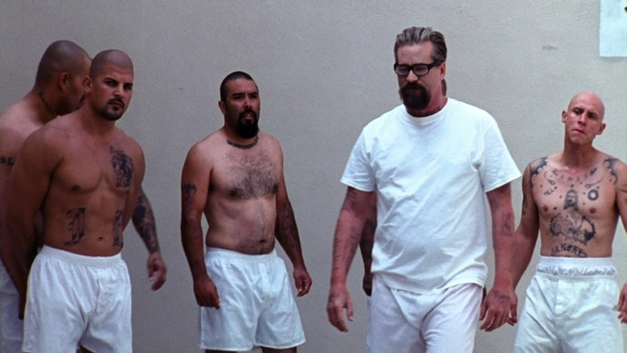
The inmates, man, they were ugly.
I don’t think I have ever seen such an uglier group of people in my life. Some looked the brothers of Igor on a bad day, while others were the splitting image of Frankenstein’s monster. I saw evidence of what might have been genetic experimentation, or in-breeding. Some of the inmates seemed to have some kind of physical deformities, while others were just covered completely from head to toe with tattoos. Most were toothless, or had one or two teeth brazenly standing tall and proud in their mouths. All had short hair. Most were either bald or had crew-cuts. There were no mustaches or beards at all.
Arkansas ADC did not provide dental services to the inmates except in two ways. The first was extraction. Teeth were removed without painkillers or anesthetics. The second was the creation of dentures for those inmates without teeth. But to qualify for a full set of dentures, you had to have most of your teeth removed first. Which obviously led to some interesting situations to the inmates there at the facility.
Most were toothless… it is true.
In the ADC, there was no dental coverage or treatment except for but one procedure; extraction. The result was that most long term felons became toothless over time. Long term felons with life sentences eventually lost all their teeth. After all, the “free” toothpaste was ineffective as a dental aide, and unless you had family that would “put money on your books”, that was all you had to work with.
We all worked at the ADC. But we were never paid for our labors. Thus, unless one had friends or family outside the prison walls, one would be forced to subsist only on the few offerings provided by the state.
Food
“Courage is not something that you already have that makes you brave when the tough times start. Courage is what you earn when you’ve been through the tough times and you discover they aren’t so tough after all.” -Malcolm Gladwell, David and Goliath
Food was not like you would get in prisons up North. Pennsylvania, for instance, gave each inmate a piece of fruit with each meal. You would also get a dessert that can include ice cream. They would eat such things as pizza and chicken wings. Salads, store-purchased bread; tureens of Campbell’s soups were all representative normal fare for consumption. Nevertheless, all of that was unheard of in Arkansas.
I spent six months in a Pennsylvania prison awaiting for my paperwork to clear after a parole violation. (I had a broken cell phone, and an unopened bottle of wine.) They ate so well. They had fruit.
I am not kidding. They had fruit with every meal and you could even TAKE IT TO YOUR CELL! The fruit consisted of bananas, apples, oranges, and pears. My gosh. We NEVER had fruit in the ADC.
Other foods included ice cream (Ice Cream! We never had ice cream.) and pizza. My goodness, the inmates in PA had absolutely no idea how great they had it. Not to mention you could get a television in your cell, you were paid for working, and could smoke in your cells as they all had a built in lighter in the wall. Heck, in the ADC we had none of this.
Arkansas was a “punishment” state, and they served us gruel.
Remember the Star Trek episode where Kirk and his men were trapped on a planet that represented Rome in the 1960’s with gladiatorial battles? Yes, it was like that. No, we didn’t eat “gruel” as of the 1720’s style. We ate the modern day equivalent. It was called Global, and was packaged for easy prep and serving to inmates. The Star Trek episode was called “Bread and Circuses” and can be found here.
Global
In “the ADC” (the state that I was incarcerated in) we were fed mostly an artificial food called “Global” and lots and lots of beans.
The name “Global” is a brand name given to a nutritional powder that is fed to inmates in the ADC prison system. This powder is mixed with water and cooked under low heat to make a kind of wet dog food that is editable by humans. The taste is barely flavorful, but it is not enjoyable and generates quite a bit of stomach gas. When pigs are fed this substance, they are unable to expel the generated gasses and eventually die.
Global is a (so advertised to the inmates) nutritious brand of food. It is like wet dog food for humans. There were initially many flavors. (Five back in 2004.) Rumor had it that it was developed for military troops overseas, and was bought in bulk at a great discount by the ADC. I do not know if it was true or not.
While I was there; there were initially five kinds of flavors, but eventually it was reduced to only the three “most popular” flavors. “Sweet and sour”, “looks like chicken”, and “could be beef”. All tasted terrible and gave off tremendous amounts of gas within hours upon ingestion.
As a person who has since spent a number of years in China, I can tell the reader that there are many ways that tofu can be prepared, but the way this “global” was prepared was wholly marginally unpalatable.
It arrived in a bag of clumpy dust. The kitchen workers would simply pour a measured amount into a tureen (which looked like a large stainless steel cement mixer), and add water using a lawn hose. Then it would be heated to the desired temperature.
I like tofu, but this stuff was not at all editable. And this comment, you must know, comes from a person who has adapted to eating fish heads and rice, who enjoys eating snails and odd seafood, and drinks snake wine without concern.
Why they couldn’t of simply served us Ma Po Tou Fu (麻婆豆腐)? It was cheap and delicious tasting.
I was told, when I worked in the kitchen that “another” ADC facility (which one I don’t know, maybe ADC Cummins) fed left over global to the pigs on the farm. However, the pigs were unable to pass all the gas that was internally generated and they “blew up” and died. I don’t know if this story was true or not, but after seeing the effect that global had on our stomachs, I wouldn’t be too surprised.
“They do get a lot of watermelon when the season is in but almost all of the food they fix is really high in starches. Most of the time the eggs are powdered and sometimes green as is the salami it is not unusual for rats to have there babies in the middle of the flour sacks that the guys cook from and they just get the flour around them, on holidays while we get our three meals a day they get two and staff usually steals the turkeys and the guys eat little pieces of canned chicken in rice. Breakfast is at 3.00 in the morning, lunch starts around 10.30 and dinner around 3.30.” -Behind the walls
Beans
"Attitude is a little thing that makes a big difference." - Winston Churchill
We did get to eat a lot of beans.
We had beans all the time. Black beans, pinto beans, red beans and Lima beans were the most popular beans that we ate. They were cooked and boiled and served plain. Sometimes, salt was added to them. They would fill you up and were nutritious. But you soon grew tired of them, and they caused you to get a lot of intestinal gas. That was not good in a multi-felon dormitory; where the release of farts could be construed as a violent insult. (Most especially true with the young urban African-Americans.)
Rough Bread
We always had rough bread. The bread was made of a mixture of 50% white flour and 50% horse feed. Make no mistake here. I am not exaggerating.
While it is possible that this was done to save money, I would actually guess that it was done to create a “tough” environment inside the prison. Actually, how much money can you possibly save by buying horse feed instead of flour? Therefore, I am convinced that it was done intentionally to create a very harsh environment to make prison as uncomfortable as possible. After all, when Bill Clinton (D) was Governor he set up the “Punishment” rules that that ADC now implements.
The bread was made from horse feed and whole-wheat flour. I know. I worked in the kitchen. It was written on the sacks that the feed came in. It said (in all bold letters, in Arial font) “NOT FOR HUMAN CONSUMPTION”. The result was tough crunchy bread that belonged on Beowulf’s table. I laugh now, but the bags of food in the kitchen all were marked “not for human consumption” on them. I am sure that the prison officials would argue that this was not the case, but I can tell you that this is EXACTLY what we ate. I did work in the kitchen and I can attest to this fact. In life, what is supposed to happen, and what actually happens are often diametrically opposed.
Just because something is not supposed to occur, does not prevent it from happening.
The bread was hardly tasty, and we only ate it as a last resort. Some inmates would take the bread and put it in their cup and fill it with milk. Then by adding something sweet like stewed tomatoes, or crushed up candy they would be able to eat it as a kind of poor man’s dessert. We would never get fruit, ice cream, puddings or Jell-O. Those were truly luxury items for us.
Other felons have repeatedly told me that they were able to get fruit, cakes, sugar, pizza, and even salads at other prisons. I know that some jails would serve these items, though at a severely reduced caloric content, but at the ADC, all these things were banned. We did not eat anything like that. PERIOD. This is non-negotiable. We simply did not get to eat such things.
The guards that worked the kitchen were generally humane, and understood that they couldn’t always serve us gruel. After all, if they continued to do so, riots or worse might occur. Life in prison was always a balance between how much punishment they could dish out before we would revolt. Thus they tended to break up the meals so that every day or so there would be biscuits made of real bread, or real meat, or a decent vegetables as a side.
It wasn’t always so horrible. (For instance, sometime we got raw onions that we could mix with the beans. That was always a treat. Or at other times, we would get a hamburger and there might be a pickle or ketchup on the side so that we could make a sandwich. Ah. Good times. Good times!)
Additionally, the ADC always gave us a good great meal for Thanksgiving and Christmas. The same was true for the 4th of July. Truly, the guards were pretty decent folk.
However, aside from the major holidays, some days were truly a waste of time marching down to the mess hall. We would grab the tray and just deposit it into the cleaning booth without even trying it.
Okra
In season, we would also eat boiled okra. It looked like green snot, with uncooked kernels of corn inside.
There are different ways to cook okra. The preferred method at the ADC was to boil it into a gooey paste. This green snot-appearing paste would have small hard seeds inside of it. That reminded me of uncooked baby corn. I never cared for okra, and I hope never to eat it again. Also in season we would eat corn, which wasn’t so bad, and turnips. (I well remember the “Bill, the galatic hero”, and his comments on okra.)
“Bowb!” Bill, the Galactic Hero is a satirical science fiction novel by Harry Harrison, first published in 1965. Six sequels were published, from 1989 to 1992.
Turnips
I was never a big fan of turnips and I hope never to eat them again. Their taste never appealed to me. I wasn’t raised with that style of southern cooking. The way they were prepared was also unique. They would boil the turnips in a huge vat, then they would be mashed in a machine with some milk powder. The result was a kind of turnip mashed potatoes. Yuck!
Actually, I have to ask, does anyone actually eat this vegetable in this manner? Truthfully.
Stewed Tomatoes & other vegetables
Other vegetables would include stewed tomatoes (a personal favorite), raw onions (great with black beans), canned peas, boiled collard greens (meh), boiled spinach (also pretty good), mashed potatoes (always welcome), mashed Lima beans (why? In God’s name, why?), and rhubarb (some people do eat it, but not me). Occasionally we would also be served carrots, corn (especially in the summer), zucchini (not so bad), and pickles.
About once or twice a week we would eat a piece of chicken, hot dog or a hamburger.
On special days we would even get a peanut butter and jelly sandwich. You can’t mess up cooking these things, and so it wasn’t all that bad. Though the portions tended to be very small. Sometimes, certain prisoners would cycle back in line to eat a second time. When that happened they ran the risk of getting caught. If caught they risked going to “Jail”. Which was the “hole”. Not a place you want to spend a few weeks in. Especially for a second peanut butter and jelly sandwich.
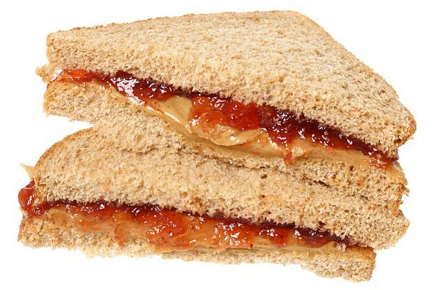
Powdered Egg Breakfast
Breakfasts were not that bad, though they tended to be served at 3am in the morning (Seriously!). They consisted of real eggs, or fake egg powder with grits, beans and biscuits. On the weekends we would always be treated special and actually get pancakes.
Depending on the prison you attended you would find yourself eating powdered eggs more than the real eggs. This was a real surprise to me because the ADC prison system had a complete chicken farm that was very productive. We could have been eating eggs for morning, lunch and supper and still have eggs left over. But, like everything else, the eggs were sold at a profit to support other state funding initiatives (read: corruption). Us inmates had to endure the lower cost alternative; powdered eggs.
Powdered eggs are useful when making things that required eggs as an ingredient. They are not really suitable as a “stand alone” food item. That is because they really don’t taste that good.
There are those in prison who have told me that they can actually taste good if you know how to prepare them. It involves a specific amount of water, added at the right temperature and a special mixing procedure. However, that would not really be possible in prison, where we would simply dump the powder in a big tureen and add water from a water hose, and then cook on a flat plate.
Brickeys used powdered eggs almost exclusively. Other prisons in the ADC used them far more sparingly.
Hard labor
“There are all these moments you think you won’t survive. And then you survive.” — David Levithan
If you are sentenced for prison time in Arkansas you will do hard labor. Everyone does hard labor, and no one is exempt. Men 70 years old will struggle alongside 18 year old men. You work hard, long days in the hot and humid sun of the southern United States. (Rumor had it that the cut off age for working in the fields was 45 years old. But that was only a rumor. If you were sentenced to hard labor, you did hard labor. If you died, well…)
“While I agree some hoe hoe squads like PB unit can be quite easy at times Varner and Brickey's hoe squad are no jokes and yes they do have broke down guys out there. There have been heat strokes, broken bones, heart attacks and even death. So while you make light of the situation and say that it is no big deal, you are WRONG! I was there and I know of NO ONE who wanted that job. And if you think that calling the warden on a hoe squad rider will work once again you are wrong. Because what happens then is that he will get written up lose his class sent to the hole and guess where he goes then? Thats correct, hoe squad, of course he will get a new rider but I am quite sure they will know who he is. Your comments are academic not real world. Unless you have spent 60 plus days in the heat with a 18 pound hoe standing side by side with 20 plus men trying to keep up and called all manner of degrading names you should not speak on the subject.” - FinallyFree
Hard labor was difficult.
There is no other way to describe it. It was intentionally designed to be that way, and at the end of the long hot day you would often find huge grown men crying or passed out on their racks. I have seen it. It was very hard and very; very difficult.
“Only a man who knows what it is like to be defeated can reach down to the bottom of his soul and come up with the extra ounce of power it takes to win when the match is even. “ –Muhammad Ali
How it was Conducted
After shaving off all our hair, they marched us off to the cotton field to hoe and till the soil manually. This was hard labor in the hot humidity of Arkansas. It was brutal. The guards rode alongside us on horses. They all wore a vest and a cowboy hat. They carried a 44 caliber Smith and Wesson pistol. Sometimes they would have another guard with a shotgun (loaded with buckshot) that rode in a white pickup truck nearby.
They did shoot on sight if anyone failed to follow orders.
Shots were fired. While I was there, one of the guards fired his pistol at an inmate, and the horse bucked up and he fired again. Luckily no one was hurt. But the guard was thrown from the horse and ended up with a broken arm.
“(Talking about the ADC hoe squad) … He said they will talk about your momma, wife/fiance/girlfriend and kids just to try to get you to do something that will get you in trouble. Very horrible degrading things that I wont even repeat. And I KNOW he is not telling me everything just to make sure my worry is kept to a minimum. My fiance has a bad back and a lot of pain that he deals with and none of that mattered a bit. He had to do everything everyone else did and just suffer through it. And trying to get a CO in trouble is the worst thing you can do because it will come back on the inmate 100 fold. I make damn sure during my visits that I am above respectful to them so that nothing comes back on him. Even when they are a**holes. The hoe squad rides are the worst during visitation and I'm sure to the inmates too. I dealt with one just last weekend.” -sadgrl
To work the fields we had to get up at the crack of dawn during “tropical season” and work “tropical hours”. That meant start work before 6 am. Here, we would march out to the courtyard and form into work squads. Each squad had from 15 to 20 people.
We would stand in lines in the still morning darkness, while we were being reviewed by a corrections officer on horseback. After making sure that everyone was in place and accounted for, we would be marched out to the fields to work. Arriving on site just when the sky was getting light.
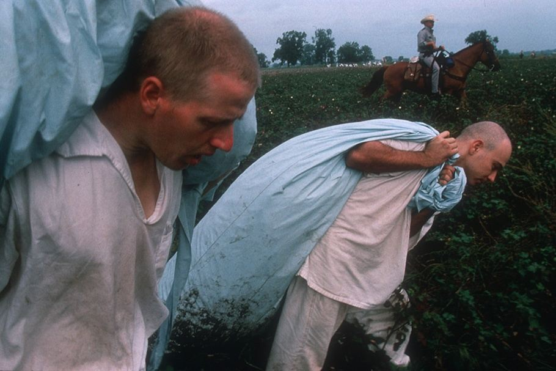
Sometimes we were marched to buses which would cart us off to an even more remote field off in the distance. In any event, we would pile out of the bus, grab our tools and march out to our work site.
This often meant going to an embankment or overgrown edge of field where we would proceed to remove every single blade of grass and plant from it with mechanical precision.
There was no cadence called, but the guard would direct us where to dig and how to do so; whether it was our left side or our right side. He would tell us to stop the dig or to start a new line. We always formed a line and attacked the ground fiercely with ruthless precision.
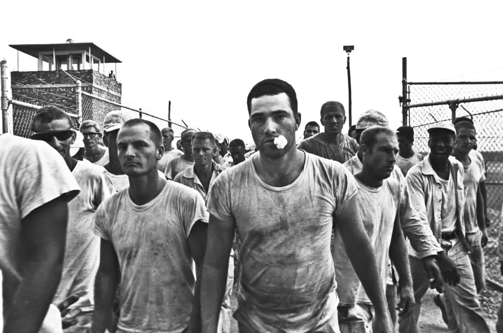
You need cadence to work as a team. If so, we could have worked together as a team. Instead we would move forward at our own pace, with those as the ends of the line setting the pace. They tended to be animals who worked at a frenzied pace. It’s hard for us 50 year old men to keep up with a muscled, body building 20 year old. They would generally go at a pace of one strike a second. It was like trying to follow a robot.
Water Run
Every two hours a tractor would pull a water trailer over and we would line up and get hydrated. This consisted of an army surplus water tank towed by a farm tractor. At the end of the water tank was a spigot, and next to it was a dispenser of paper cups of the cone shaped variety. There were no limits on the amount of water we could consume, but the guards would make sure that we weren’t milking the time at the trailer. Then we would continue our feverish pace.
One Arm Script
If you were lucky you could obtain a “one arm script”. This was a prescription that limited your activity to only using one arm. It was for people who were sick, ill, old, infirm or had a broken arm (hence the term). Those with the script would “putts around” on the outer fringe of the squad while the rest of the squad was banging away together on the rock hard soil.
Lunch
At the close of the shift, we would be marched back to chow hall. Since everyone wanted to get back to the barracks, we would often find the squad jogging and then running back to the gates. There, we would kick off our muddy boots where we would hand them to another guard who would kick the mud off of them and hand them back to us. Of course we would then strip and take a group shower to wash all the sweat and crud off. Then it was off to chow hall. We would eat our “global”, wash it down with kool-aide (or milk), and then return back to the barracks to collapse on the bed in complete and utter exhaustion.
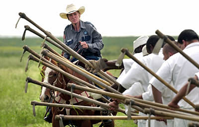
Hoe squad was extremely trying and difficult.
Duration
Everyone had to do a minimum of two months of hard labor. But if you weren’t working hard enough, or even looked the wrong way, the guards on horse-back would mark you down in their vest pocket book. That would result in additional time being added to your two months at hard labor.
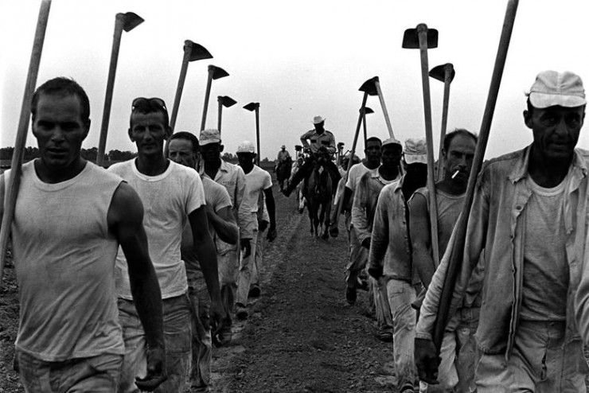
Typically, I would say that most inmates had additional time added on. I would hazard a guess that it would be from two to six extra months. The real and true troublemakers were destined to forever be constrained to do hard labor. For them, this would continue on season to season, until their souls were constructively pacified.
This was a real shame, as most of us desired to finish our hard time labors as soon as possible. But, eventually, all of us would “graduate”. And upon graduation, we would be able to obtain the benefits of completing the hard labor phase of our existence.
“Here in the Arkansas Department of Correction (ADC), us kaptives are forced to do arbitrary strenuous field labor known as "hoe squad" with no pay and under the threat of punitive-isolation for refusing to work. The work done on hoe squad is arbitrary and serves absolutely no purpose other than to physically exert us kaptives and so the pigs can try and get one of us to fall out from exhaustion so they can lock us up in isolation. On hoe squad we are forced to stand nuts to butts in a line, each with a hoe, and chop the ground as we move the line backwards, peeling the grass back as we go, creating a "wind-row" of grass and mud/dirt/rocks/etc. Then we have to pull back as we chop, rather than hitting it and letting it lay. This is very physically exerting as the wind-row gets extremely heavy. This sometimes causes you to miss some grass because you have to stay with the line and you are struggling to pull the wind-row back, which is most difficult for the kaptives in the middle of the line due to shifting. If you miss grass two or three times the pigs "call the truck" on you, meaning a pig in a truck pulls up, cuffs you, and takes you to isolation, even though your clothes are drenched in sweat, your hands are covered with blisters, and it is nearly quitting time for the day. ADC spokesperson Dina Tyler advises the public that this work is voluntary and not forced, and that a kaptive who refuses to work will just not earn meritorious good time credits. But in order for a kaptive to not earn meritorious good time credits he/she must have h classification status reduced (class busted), and to have your class busted you must be convicted of a disciplinary report. Meritorious good time does not take time off of a sentence, it only makes a kaptive eligible for parole consideration sooner. Spokesperson Dina Tyler would also have the public believe us ADC kaptives are paid for our labor, but the only money we get is six dollars a year near Christmas time, with a deposit that reads "Happy Holidays." - by an Arkansas prisoner August 2015
Completion of Hard Labor
Once you completed the hard labor phase of your tour, the rewards of GP (general population) became available to you.
First off , you were able to be reassigned a better barracks to live in. The hard labor barracks were awful. The inmates there all had trouble conforming to the rules. It was always terribly noisy, with fighting, stealing, and provocation commonplace. While prison is, by nature noisy, this environment was beyond compare. Youthful urban blacks would be screaming at the top of their lungs all night, and there was always someone trying to trick you or steal from you.
Assholes abound everywhere, but in Arkansas, I found that most people treated me ok. The only problem was the unstructured African-American youth. They had no parental figures and pretty much acted like feral animals. Some were really bad. Just imagine two feral dogs fighting over a piece of trash. That was exactly how it was. Apparently, most grow out of this phase, through the experiences of life. However, in prison, the young and old are mixed together, and you have to endure a bad side of the African-American experience.
Cultural Differences
Incidentally, there is a true and real cultural difference between different races that were incarcerated with me. There were many reasons for this, but I am not going to avoid the obvious for free-speech limiting “political correctness” Truth be told, the African-American prison population tended to be loud, boisterous, unruly, energetic, emotional, and contentious.
They had older men, which generally stood around on the sideline and kept order when everything got a little too rowdy.
Spanish-Americans, we called them “SA”, were very peaceful and quiet. They were all generally friendly and surprisingly very devoutly religious, even the most criminal and evil of the bunch.
I only saw two Asian-Americans in prison. One came from Korea (he was tall and stood over 6’2”) and the other from Vietnam.
White Americans also tended to be much quieter. They were just doing their time. For the most part, they kept peaceful and did what they were told. Overall, it was as if the African-Americans treated prison as a big game or kind of summer camp, while the whites and the SA’s considered it to be actual punishment. They were both quiet and kept to themselves. That might sound racist, but it really wasn’t. It was cultural. That’s just the way it was.)
Political Correctness Intermission
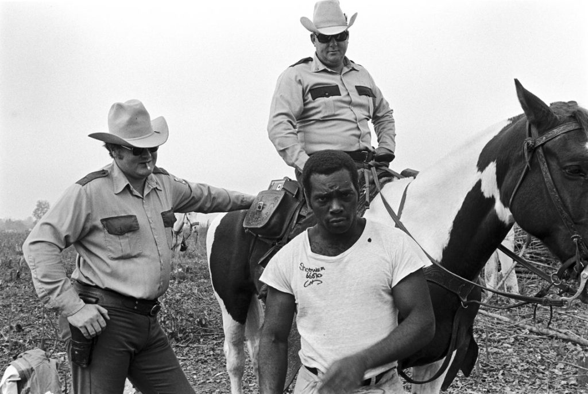
Political Correctness – By its very nature, politically correct thinking is most often disingenuous, if not altogether intellectually dishonest. Politically correct thinking replaces individuality and authentic opinions with socially acceptable rhetoric and watered-down behavioral tendencies. I actually miss the days when most conversations consisted of unpredictable, highly charged, and stimulating discourse – you know the ones, where people were encouraged to openly share their true thoughts and opinions. The irony of politically correct thinking is that a society void of individual thought actually creates the opposite of diversity. It is, in fact, politically correct thinking that results in a brainwashed group of sheep that completely lack diversity as a result of a generification of thoughts and actions. The dark secret behind politically correct thinking is that it slowly dulls your senses, and neuters your innate ability to be discerning. I don’t know about the reader, but I don’t want to hear what you think I want you to say, or what you think you should say, but rather I want to hear what you’re really thinking. Have you ever sat in a meeting where all parties sit around the table with a deer in the headlights look trying to figure out how to dance around an issue rather than address it head-on? It is this type of issue that pollutes our culture, stifles innovation, undermines our productivity, and sentences those who embrace politically correct thinking to a life of mediocrity. This is a blanket term that today is used to demonize and isolate. It prevents a person from saying what they truly think. History is full of reminders in how to use terminology like this. The dehumanization and objectification of political adversaries as preparation and justification for mass murder came into sharp focus as an effective weapon during the French Revolution. The specific insults morph to fit the circumstances and the times, but each insult is designed to have the same effect — to dehumanize and to objectify a group of people in opposition to the dominant group that has seized power and the legal mechanisms of the State. Here is a partial list of the defamatory names of condemnation as utilized by tyrannical regimes as well as the fate meted out to people branded as such: 1793, France Enemies of the people Enemies of the revolution Girondists Indulgents Aristocrats Criminal Clergy Criminals against Liberty Mass executions by guillotine in Paris and cities across France. Genocide against the Catholic clergy, nuns and laity of La Vendee. 1917, Russia Bourgeois Capitalists Counter-Revolutionaries Reactionaries Political deviants Kulaks Czarists Trotskyites Mental defectives Mass executions by firing squad, mass graves. Imprisonment and torture in Lubuanka and Leforto prisons. Millions starved to death. Others sentenced to hard labor in Siberia. 1966, China Class enemies Landlords Bad elements Rightists Rich peasants Impure elements Revisionists Re-education camps, sanctioned mass murder by Red Guards, torture, imprisonment, starvation 2016, USA Deplorables Racists Sexists Homophobes Xenophobes Islamophobes Irredeemables What could possibly happen? What makes these derogatory blanket terms salient and potentially dangerous is that they were intentionally uttered publicly in front of an audience of admirers in 2016 by Hillary Clinton, , in possession of all the levers of State power, and that she knowingly used these defamatory, inflammatory, dehumanizing terms to describe en masse tens of millions of American citizens. As students of history we’ve seen this before. I avoided including Adolf Hitler’s dehumanizing remarks against Jews, Gypsies, Communists and others because there are still survivors of the Holocaust among us and wounds so deep never heal. But the atrocities and genocide of 1941-45 also started with words — dehumanizing words used against entire groups of people. There is a vast difference between what an anonymous individual says and what the State says. The examples above are grim reminders of what can happen when those in power, or those who seek it, are celebrated, promoted and legitimized In their attempts to destroy their political enemies. In a lifetime of enduring the tyranny of the arbitrarily condemned and surviving to write about it, Aleksandr Solzhenitsyn provides stark witness for us all. What he learned in the strife of decades is that no human is irredeemable, neither the jailor nor the prisoner. And that to think otherwise is to condemn us all.
To which I include;
“Gradually it was revealed to me that the line separating good and evil passes not through states, nor between classes, nor between political parties. If only it were all so simple! If only there were evil people somewhere insidiously committing evil deeds, and it were necessary only to separate them from the rest of us and to destroy them. But the line dividing good and evil cuts through the heart of every human being.” – Aleksandr Solzhenitsyn, The Gulag Archipelago
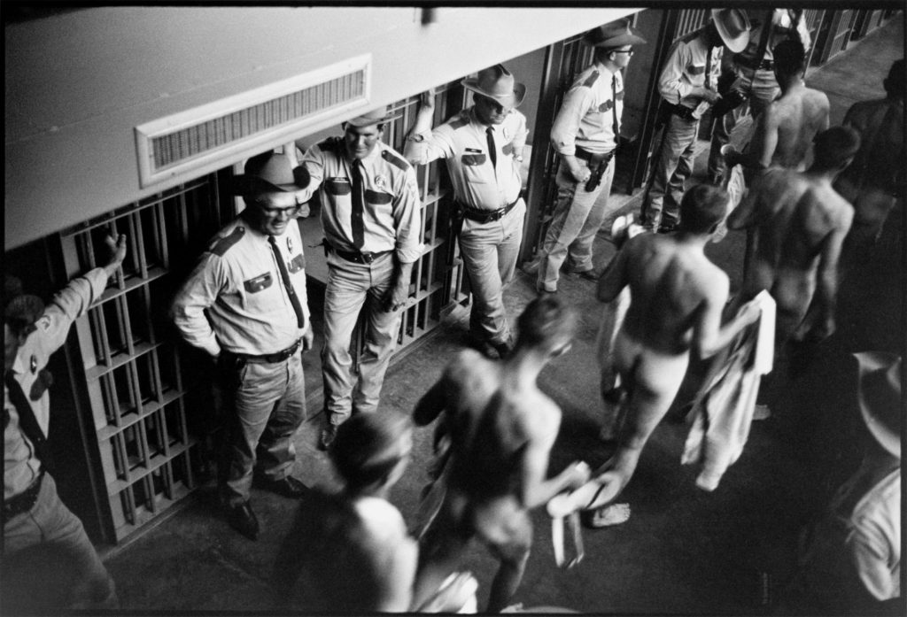
Job Assignment
Another benefit to joining GP was that we would be assigned a job. Everyone worked in prisons, though my state did not pay anyone for their labors. Other states are known to provide a low salary rate for taking on work, but that was not the case in Arkansas. You must work, and you do the work for free.
That is slavery.
But that is what happens when you are incarcerated. You become a slave. Literally. According to the Constitution, only non-felons have equal rights under the law. Think of the consequences of that for a second.
If you were fortunate, you could be assigned postings where got to live in the “kitchen barracks” which was often much quieter. Plus, you could often get access to some food that other inmates didn’t have access to. (For instance we might get extra sized portions of collard greens or turnips. Also during the summer months we could volunteer to husk corn at night. If we did that we could get a evening snack of leftover food from dinner.)
While some inmates devised a system of theft of food, most of us were just content to work there and enjoy extra-large portions of the chow that we can provide for ourselves.
Some would eat three to five portions. I however, chose only to eat what I was provided. Part of the reason was that I believed that everything balanced out… If you take a little more, life will cut you a little less. Karma, but also I wanted to be thin and lean when I got released from prison. I was. I looked good for an old man.
Inmate Uniforms
In Arkansas the inmates wore white uniforms. Everything was white. Underwear, socks, tops and pants were all white. We were also issued with French Foreign Legion-type hat that had a flap of cloth on the back to prevent the hot sun from blistering our necks. We didn’t use belts, instead the pants had drawn-strings to gather them around our waists. We had one pocket in the front to hold things, but it was rarely used.
This matched the rest of the prison itself. The sheets, beds, walls, and showers were white. Everything was white. Depending on what unit (prison complex) that one attended, the alternating contrast color varied from forest green to battle ship grey.
The prison uniform was designed in the 1950’s – 1960’s and was a legacy of that time. The pocket was initially designed to hold cigarettes that the inmates were permitted to obtain and smoke at that time. But sometime in the 1990’s, a general ban on smoking at prisons in the ADC was enforced, thus rendering the pocket superannuated. It was rarely used while I was there.
The shirt was a long sleeve cotton pullover with a collared V-neck. It was the same cut as the old style wool Navy “undress uniform” of the enlisted crew. (Only without the flap in the back.) On the right breast your name was stamped in black letters.
On the back of the clothes was an identification number that was used by the laundry crew to determine who owned the clothes.
Shoes were flat, cheap canvas covered flat deck shoes. (Though, many inmates could purchase white tennis shoes in the commissary. I never did. Many inmates however, chose to purchase the shoes, as it was a rare item of comfort. See the photo below.)
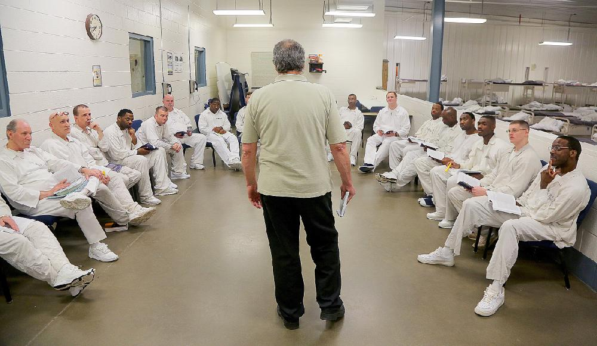
We were also issued other clothing for the hard-labor in the field. This would include brogan shoes, and if it is cold out, a coat and knitted cap. Everything was white, but got easily soiled in the hot dusty hard fields. Additionally, we could buy gloves at the commissary store to prevent our hands from blistering up.
Brogan a term generally applied to any heavy, ankle-high shoe or boot. More specifically, a Brogan is any such boot worn by a soldier in at least the American Revolutionary War and the American Civil War. In the American revolution, the British soldiers wore brogans that were straight-last, meaning that they were interchangeable with the left or right foot, supposedly allowing for even wear on the boots.
The Commissary is a store for inmates. In the United States armed forces and prisons, as well as the United Nations, it has the derived meaning of a store for provisions, with the original military meaning referring to an officer or official responsible for food, stores, or transport for a body of soldiers. Commissaries sell primarily grocery articles; other items can be purchased at special promotions.
All uniforms have three numbers associated with them. The first number [1] was the inmate number. This was a six digit number.
There was also a laundry number [2]. This number told the person assigned to laundry duty which inmate in the barracks got which laundry. It was typically a three digit number.
Finally, there was a barracks assignment number [3]. This number defined the barracks that you were assigned to and the rack that you slept in. An example would be “16-6” which would mean barracks #16, and rack #6. This number was of the designation of a two digit number separated by a hyphen and another two digit number. All items of clothing had these numbers on them in various ways
Fashion
Believe it or not, fashion trends persist no matter where you live. Prison is no exception. I am not talking about the wild barracks fashions of the homosexual crowd, but rather the conventional fashions of the general population. These fashions varied from time to time. One of the most recognizable ones was the shining of shoes.
Those of us that were issued with the brogans for work in the fields would take the time and put them in a high state of shine. These were brown boots, but they would be shined in such a way that at the outer tips were shined to a high gloss black color, and the remaining brown sides were left in the natural brown color. Cleaned but not as shiny. This was a point of pride for a number of the inmates, especially those from the urban areas.
Other issues of fashion and style is to wear pristine, white, well creased inmate uniforms. This might not sound like a big deal to the reader, but in a world where every aspect of your life is controlled, and individuality is suppressed, being able to dress in style takes on a new meaning.
To obtain such pristine clothes, the inmates would pay other inmates to wash, fold and press the clothes. In so doing, a small cottage industry would spring up providing laundry services for the most well-heeled of the incarcerated.
At the time I was incarcerated, the going rate was 25 cents per item of clothing (negotiable). Other arrangements included, one cigarette for one week free laundry, and two ramen noodles for washing a shirt. Because the prison was a hard labor camp, the uniforms all tended to be dirty and dusty. Even after returning back from the prison laundry. So, in order to get pristine white clothes, hand wash laundry was the only solution available.
Ingenuity (radios, headset, shower heads)
Inmates were constantly modifying, innovating, adapting and creating all kinds of solutions to improve their lives. We never had access to the things in other prisons. I heard that other state prisons would allow you to have MP3 players and television sets.
Not for me.
I was at a hard labor prison in a “punishment state”. (Not every prison is like this. For instance, in liberal states such as New York, they are very generous with providing inmates with alternative punishments. For instance, all inmates in NYS prisons are able to get free electronic tablets.)
For a brief period of time, I and a number of other inmates, spend a few months in another state prison system. Thus giving us the exposure of comparative evaluation. This was a prison in one of the Northern states. They ate real food, not fake “pretend” food, and it was plain but good. They had pizza, fruit, ice cream, and even chicken wings on Superball Sunday! They could buy typewriters, radios, television sets with cable access, and MP3 players with downloadable music selections. All of these things were unheard of where I was incarcerated. Such was the differences in philosophy between the two individual states comparatively.
Not where we were. We were severely limited in what we could possess. So, as a result, we would modify food, boxes, pens, and whatever else we could obtain into various implements and appliances.
Head Set Speakers
We did have access to a small hand held radio. This was battery powered, and we could purchase the batteries in the commissary store. It was small, about the size of the palm of your hand, and was transparent. So you could see inside of it. It had no speaker, however. To listen to the radio you had to use a set of ear buds, or headset.
There are no wall plugs in prison. At least not where I was. If you wanted electricity you bought a battery. And we tried all kinds of ingenious ways to keep them alive, including throwing them on the floor to shock them back into life. Other prison systems not only had a plug, but a wall lighter for cigarette smoking in your cell. It looked like a car lighter of sorts.
One of the innovative work-arounds by the inmates involved taking a toilet paper cardboard roll, and modifying it. The roll would have a hole cut in the middle of it, and the headphones would slip over the ends. The result was a nice small speaker of medium loudness. This was not a common modification as the use of overt loud displays was dangerous. Not everyone wanted to listen to Country & Western music, or Urban Rap. So it only seemed to be prevalent in more or less friendlier dorms. The more dangerous dorms, i.e. “punishment” or “newbie” dorms were too animalistic to allow this kind of activity.
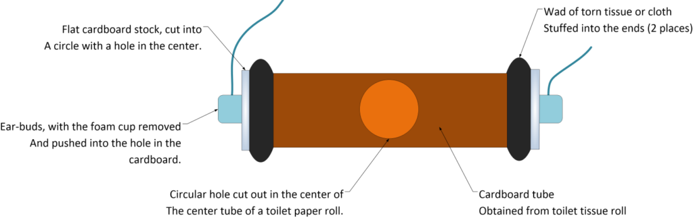
Interestingly, I find it amazing how such simple changes can result in an amazing set of solutions. Necessity is the mother of solutions, and I can certainly attest to that fact.
Shower Heads
Showers were a necessity, but the way that the water exited the pipes wasn’t the best. For the most part it was like a fine mist that got a person damp, but didn’t clean you.
In order to get clean, often times an inmate would devise an improved shower head that would fit over the state supplied one affixed to the wall.
These heads all worked the same way. What they did was collect the mist and forced it to fall down in a trickle. It is certainly not as great as what you would find at Home Depot® but they worked well enough to get us clean.
The easiest and most common fix is to take a bottle of shampoo, they were tiny bottles, and cut the bottom out. Then place the bottle over the shower head. The water stream changes as the plastic gets hot and it tends to make a little whining sound, but other than that it seemed to work out just fine.
Adaptability was the watchword in prison. One must adapt to a given situation; endure what is uncomfortable, be humble when needed and adapt as situations arise.
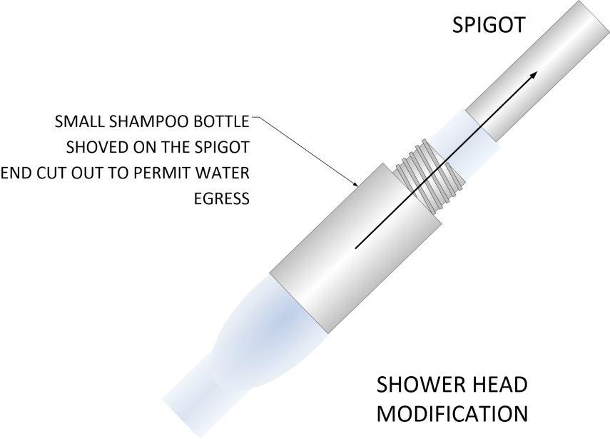
Soldering kit
While not permitted, there were a number of electronic technicians who were imprisoned and who maintained a small portable electronics lab. By scavenging the electronics of old radios, and other devices (as few as they were) they were able to assemble a small kit of tools and parts.
This kit was used to create modifications of exiting radios to improve amplification of volume, improve range, or other benefits. They also were able to create tools for the creation of tattoos, and other more or less functional devices.
None of these tools were used for the purposes of escape or as weapons.
To solder, typically a wick was made out of toilet paper wrapped around tightly. It would look like a yard long paper snake. This would be lit through use of a spark created by using wires connected to a battery.
The resultant fire was small and long lasting, and was just barely hot enough to heat up an improvised soldering iron. This was nothing less than a spoon or fork that was converted into an improvised solder item. The iron would be placed in the fire and then back onto the PCB until the solder would melt. It was a time consuming process, but did work.
Like anything else, if you modified a radio, there would be trade-offs. If you increased the volume, you would obtain distortion of the audio stream. If you increased the receiving range of a radio, you would get drift effects and lose the ability to lock on to a given station. These were the consequences of living in the environment where we lived.
Tattoo machine
I don’t have tattoos, and never really wanted any. But I am from a different generation.
In any event, they are very popular today, and most inmates obtained tattoos. Some of them were really great. As there were people of all kinds of levels of skill and ability there.
Typically, the process of tattooing was rather simple. Essentially, you make a small hole and fill it in with ink. A series of holes, thus can create a picture. If you did this by hand, it would take a very long period of time. So in order to speed up the process, a machine was devised that would work like a miniature sewing machine. Instead of a needle pushing thread through a piece of fabric, the machine would consist of a motorized needle that would rapidly make a series of holes and push the ink through the holes.
The motor would be scavenged from some other electric device, made or constructed by hand, or even smuggled in somehow. The needle would be made from a nail or a small sharpened screw, and the ink would be collected from the pens that we were allowed to purchase from the commissary store.
Washroom
Each barracks had its own bathroom. In the ADC there was no privacy. While other states permitted privacy curtains for their inmates, ours was all open.
Not that it matters any more. A “free” American has no privacy. When people talk about privacy, they mistakenly assume it protects only that which is hidden behind a wall or under one’s clothing. The courts have fostered this misunderstanding with their constantly shifting delineation of what constitutes an “expectation of privacy.” And technology has furthered muddied the waters. However, privacy is so much more than what you do or say behind locked doors. It is a way of living one’s life firm in the belief that you are the master of your life, and barring any immediate danger to another person (which is far different from the carefully crafted threats to national security the government uses to justify its actions), it’s no one’s business what you read, what you say, where you go, whom you spend your time with, and how you spend your money. Unfortunately, privacy as we once knew it is dead.
Our washroom consisted of a single white painted cinder-block room. Commodes without lids lined one side. There were typically six commodes. All were stainless steel. They sat close to each other without partitions.
When you sat down your thighs and arms would tend to touch the guy next to you.
So typically, we rarely sat next to each other. Instead we would prefer to wait until a toilet was available to use. Sometimes, for the purposes of privacy, we would place a trash can on the commode to give us some degree of privacy. Like everything in life, over time you adjust to the conditions that you experience.
What was shocking to me initially soon became commonplace.
Toilet paper was issued each Sunday at 8pm. We would be issued one roll of toilet paper, two disposable razors, and a bar of soap. We would then secure these items in our lockers inside our racks. If you failed to secure your items, they could get stolen by other inmates.
Everyone eventually gets things stolen. I’ve had my things stolen numerous times. It is the way things are in prison.
Kites
One common activity, regardless of where one is incarcerated, is known as “flying a kite”. (Though I don’t know what it is called now.)
This activity is restricted to areas where one is locked up in their cell, either through punishment or isolation, and is used as a way by which one inmate can chat with another. Otherwise all one can do is sing to themselves to keep from going nuts. In this activity, the inmate tears off a thread from their blanket or uniform, and makes a long string out of it. Then then attach a small piece of paper where the inmates can write or scratch a note on it.
The inmate then throws the “kite” out from under the door. The inmate tries to throw it over and over; out far away from his cell door. It looks like he is fishing. It is a method that is hoped, that the note would eventually make its way to another inmates cell. This is done in the hope that their “fishing exercise” would eventually connect with another line and they can reel in a message from another inmate.
Showers
In a barracks of 90 inmates, we had three shower heads. Showers were available to us from 6pm until 9pm. In the resulting three hours, 90 men were supposed to be able to get clean. That is 6 minutes, per inmate in theory.
The problem is that the shower heads were too close together.
If three men took showers they would have to be physically touching each other. The showers were not stalls, but simply the wall at the end of the bathroom area. In use, the three showers were divided so that the middle shower head was not used, and only the two outer shower heads were utilized.
Depending on the units, or the prison, that you were in, some showers were left on all the time during this period. They were controlled by the guard station.
Other prisons, however, had an individual control for the showers. It consisted of a button. You press the button, and you get ten seconds of shower. To take a shower, you had to continually press the button for the duration of the shower. For a five minute shower, you would have to press the button 30 times while you showered.
I don’t know if this was to conserve water, prevent abuse, or just a sadistic attempt to help drive everyone crazy.
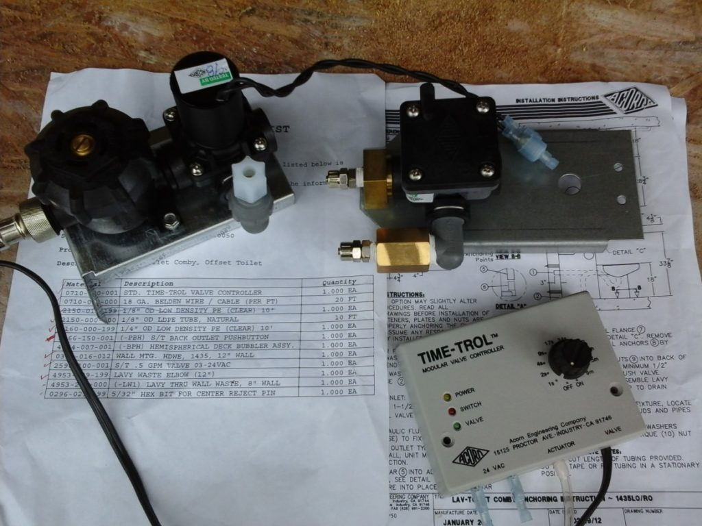
Because of the large number of people, and the difficulty in securing a shower, a system of order was generally introduced. The result was that we had to wash quickly and establish a kind of order in line. Therefore, many barracks established a pecking line that one would join.
For instance, Robert always took a shower after Tom. And Tom always took a shower after Dave.
If organized correctly, we would get in, take a quick shower and leave. Most inmates took a ten to fifteen minute shower, but there were always exceptions. A number of the younger urban youth would like to spend hours in the shower and wanted to not share it at all with the others. They were always intent on using it to masturbate in. That was fine, as long as everyone else had already finished their shower, but that wasn’t always the case.
OK, forget political correctness. These were young negro African-Americans who came from an impoverished inner city environment. Typical ages included 18 years up to the middle 20’s. Color did not matter. Some were darker in skin color than others. Some were lighter. The common thread between all these individuals was social. They are were raised in a social environment that identified themselves as “African-American”.
There were two types of showers. In the barracks we had showers that lined up against one wall. This consisted of three shower heads in a line. In the shower area next to the sally port, there were shower columns. These devises would enable a person to quickly come on in, take a quick shower to wash all the dirt off, and change without having to wait in line.
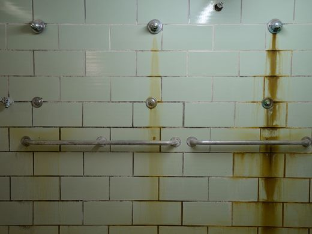
Sinks
Across from the toilets were a row of sinks. Each sink had a stainless steel “mirror” above it. It offered a poor degree of reflection because there was always some asshole who felt the need to punch dents into it. These actions tended to render all the mirrors useless.
Instead, we would choose to use a small plastic mirror that we could buy from the Commissary (the small store that sells sundries to the inmates).
Each sink had no drain plug. Instead it would have an open drain. If we wanted to hold a basin of water, we would need to plug the hole up with a cloth. One of the problems that we had was that we had no hot water.
Only the showers had hot water. However, there was a hot water faucet that we could use to get hot water for coffee and washing. We would go to the faucet and then collect the water and bring it back to the sink to wash in with.
It’s supposedly very good for you, don’t you know. From an article titled “Drinking Three to Four Cups of Coffee a Day More Healthy than Harmful”, written by Kate Kelland. Some gems from the article; “Coffee drinking appears safe within usual patterns of consumption,” Pool’s team concluded in their research, published in the BMJ British medical journal late on Wednesday. Drinking coffee was consistently linked with a lower risk of death from all causes and from heart disease. The largest reduction in relative risk of premature death is seen in people consuming three cups a day, compared with non-coffee drinkers. Drinking more than three cups a day was not linked to harm, but the beneficial effects were less pronounced. Coffee was also associated with a lower risk of several cancers, including prostate, endometrial, skin and liver cancer, as well as type 2 diabetes, gallstones and gout, the researchers said. The greatest benefit was seen for liver conditions such as cirrhosis of the liver.”
However, some enterprising inmates run a sort of “Chinese laundry” service for other inmates. They hand wash their clothes for one “favor” an item. While there is a laundry service at the prison, it does not really get the clothes clean. All the new white prison “state issue’ eventually turns a reddish grey tint.
Therefore, many inmates wash their own clothes, or employ another to provide them with a cleaning service. When this happens, those washing the clothes may be very inconsiderate and take up all the sinks with laundry.
Thus creating a condition where the others in the barracks are unable to wash their faces and brush their teeth. To prevent this from occurring many sinks have been damaged. Huge holes as punched in the drains of the sinks allowing the drink to drain directly into the water collection basin below the sinks. This does enable ready access to the sink, but at the cost of the inability to self-wash the clothes.
A favor could be anything from a cigarette to some Ramen noodles. Of course sexual activities and other kinds of tasks could be traded or bartered for at will.
Homosexuals
The homosexual community was the most colorful and interesting group of people in the prison system. They were the most upbeat, and happiest of everyone. They pretty much kept to themselves, and that was fine for all of us. If you got between a “lovers quarrel” you could get killed or worse.
They always seemed to have money and they were always involved an all kinds of activities in the barracks.
Clothing
At the barracks some would dress up in “homemade” fashion clothing. They would parade around in them in the barracks, and at times even put on elaborate skits or plays that they would compose themselves.
The clothing was mostly old discarded uniforms or painstakingly disassembled fabric where thread was extracted from and re-stitched into something different.
They would take coffee and use it to die clothing, or ink from pens to design colorful patterns. They would, if they had access to an Art Supply prescription, purchase colored pens for this purpose as well.They would make their own halters and try to die them different colors. They had an active DIY side industry going on that included small key chains and belts that they would sell to inmates or family friends for a few dollars.
Makeup
They would make their own makeup out of food stuff and Vaseline. They would take colored beads and grind them into small dust, mix them with Vaseline and use them as rouge, or lipstick.
The use of food items such as cherry flavored drink mix was always a great base for their purposes. They would make mascara out of ink and Vaseline or underarm detergent. They would also make eye shadow out of powdered drink mix and chap-stick.
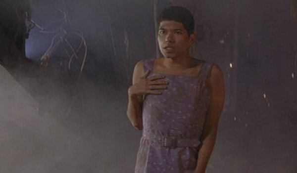
They were, to put it mildly very colorful individuals. But, they could not wear these items outside of the barracks as they would get into a great deal of trouble for violation of the dress code.
Inmate gangs
By watching television and movies you get the impression that the gangs in prison controlled everything. That was not true at all. The guards controlled everything. The gangs were a kind of support group for individuals whom needed to belong to something.
Most gangs formed from outside the prison system and then they entered the gang in prison as a continual process.
For people like me, gangs left us alone. We were older, mature, and best left to our own designs. We didn’t bother anyone and no one bothered us. While there was an occasional individual who would try to pull a trick on us, most of the gangs left us alone and let us be.
It was better that way. As long as we kept to ourselves, and did not let our egos cause us any grief, we survived. Gangs were most interested in the younger men, those between the ages of 18 and 30.
In fact, the hardest thing to tame in prison is the ego.
You learn quickly that you are nothing, and you deal with it. You survive how best you can and get on with life. You take every day by itself and do not let anyone get your goat or trick you into a fight. That is difficult. Many times you would have to take abuse and other crimes against your ego that was intolerable.
However, as long as you were friendly and could make friends, you were ok.
There were many gangs in prison. My exposure to them was very small. Of course there was the “Arian Brotherhood”, the “Crypts”, and the “Bloods”. There was the dangerous “13” group and various small groupings of Mexican gangs. But, like I stated earlier, my exposure to all of them was quite minimal.
The truth was that I pretty much got along with most everyone.
Recreation
Even though the prison was a hard labor facility, people need recreation. If you did not have any means for emotional outlets the facility would become an explosive “powder keg”. There were various methods of emotional release that were metered out to the inmates in minuscule doses. Some were organized events, while some were simple games that could be purchased at the commissary.
Dominoes
The ADC did not permit cigarettes and anything that could be used for gambling. That included cards and dice. But it did permit the game of dominoes. This game was quite a serious game in prison. The African-American contingent took this game to new emotional heights with cheering, yelling, and vocal and aggressive displays of emotion. It was actually pretty funny to watch them all getting all worked up at the domino table.
Each barracks had three metal tables each with four metal seats firmly affixed into the cement. To play a game, one of the inmates would take their grey colored state-issued wool blanket and place it on the table, thus making a gaming table. They then would form teams and play various games of dominoes. Often times they would bet on the outcome of the games. Needless to say, the games could get awfully loud at times. Typically, most games ran from around dinner time up until lights-out. Weekend games could last all day.
Chess
The game of chess was available to all inmates along with its sister; checkers. Many inmates played chess and some were amazingly good at it. With a lot of time on ones hands and little else to do, the game of chess became the only form of mental stimulation that one would have. The chess games available to inmates in jail were the large board format size that is often seen in toy and hobby stores. However, the one available to prisoners was much smaller due to the size limitations of the inmates locker. This chess game was best considered to be a fold-up portable version.
Cards
Cards were available to inmates in Jail and county jails, but they were not available to us inmates in prison in Arkansas. Unlike other prisons in other states, we did not have access to cards of any kind. Sometimes an inmate might try to make up their own deck of cards, and they would play with it for a week or two, but eventually they would get caught with it. The end result would be some time in the hole and a confiscation of the cards.
Gambling
Gambling is highly illegal in prison, but it occurred anyways.
Typically homemade dice was constructed our of a bar of soap and tested through use to determine how variable it would be. Most gambling occurred after or during commissary day when inmates would get to go to the commissary for food and supplies. Thus they could try their luck at getting more or losing what they had purchased.
Sometimes innovation played a role with raceways constructed and piece counters that represented horses and a kind of race would be constructed. Bingo was also a potential game, but I only saw it played a few times. Homemade cards did make their appearance from time to time, but their use was always limited.
One always had to be careful in gambling in prison, because one could be manipulated an “played”. If one was not careful one could lose everything and be in debt to another inmate. When this happens, one could easily become an indentured slave that would be obligated to provide whatever services the “owner” expected of him. These services could be anything, and often did include various sexual acts.
Softball
In prisons with a big enough yard, the game of softball was often played. Of course, given the climate it was either in the morning or at dusk. The day time heat was often rather harsh. The pace of the game was well suited to the prison environment and it helped to unite the various barracks and other members. Many of us remembered spending time with our fathers and uncles going to baseball games and watching them on television. It became a bonding event that was relived during our times in the yard.
Football
The game of “touch” or “tag” (American) football was often played. Teams would form up and they would play an abbreviated game of sorts. This was quite different from baseball, as in baseball we played full innings and obeyed the rules. While in football, it was more a fun sport, not taken as seriously.
Child Molesters
Cho-Mo is the term that is given to anyone in prison for a sexual offense. I was given that label, because I was accused of having child porn on my computer. The prison system is flooded with people being punished for these crimes. But only a very rare few were actually real child molesters.
Some were rapists, and some were involved in sexual deviance of one type or the other. But most were there because of “borderline” sexual crimes.
For instance, I once shared a cell with an inmate who was doing 15 years for producing child pornography. What he did was to have pictures of his three year old taking a bath in the tub. He admitted to taking the pictures during a divorce proceeding and got slapped with the charges. He is now doing 15 years at hard labor.
I once spent time in a cell with another who was doing five years for raping a girl. They went on a date, and after the date he led her to a motel. They had sex. Then afterwards she accused him of rape.
Another took pictures of his children while they were taking baths. During the divorce proceedings the pictures were entered as evidence that he was a deviant. So he is now doing seven years.
The media might give the reader the impression that each and every person arrested for child pornography was arrested because they really had some sexual deviance problems, and that they were a predator with predatory tendencies. But that was not true. Only a rare handful of people fit that profile.
There was a young man of 21 years old in prison because his girlfriend (now his wife) was under 18 when she was pregnant with his child. Her father turned him in to the police, and he was arrested while in community college. He was serving seven years.
They came after him in a armored vehicle! WTF? Militarization of police. What a horrible subject. It’s only going to get worse. Despite his gun control rhetoric, President Obama arms federal civilian agencies more than ever. 5JUL16. Go HERE.
There was a man who ran a prostitution / massage ring that employed a girl who was 14. This was child trafficking, indeed. But the reader must understand that things are never black and white. Each person and their circumstances need to be investigated fully to judge whether or not they need to be punished appropriately. In the case with the pimp, the girl said that she was 18 years old. (And signed the necessary papers that stated so. But, a 14 year old is not capable of signing anything. So the document did not protect him nor his company.) He failed to verify her age. Yes, he was wrong and guilty. But I don’t think that it merits 25 years imprisonment, because the girl came to him to get work, and he employed her.
Now, all that being said…
I actually DID meet a number of real true and EVIL sex offenders there in prison. Do not get the impression that the drag net and the associated systems have not been effective in catching the real bad guys. They have. Though, please keep in mind that that was NOT the primary INTENDED FUNCTION of the program. The purpose of the program is to retire MAJestic members who were W(U)-SAP actuated.
I met a man who would kidnap women and chain them down in his van. It was outfitted as a sexual attack machine. Yet in prison, he was nice and personable. He’s probably still in prison. His parole hearing kept coming up, and kept being denied. I feel sorry for him, but then again, I really do not know what actions he did when he was free outside. So I must keep my feelings reserved.
One man, who I once shared a cell with, was furious with his girlfriend when he found her with another man outside of a club. So In public he put a pistol to her head and raped her on the sidewalk in front of everyone at the club. He was doing a long sentence. Not life, but might as well be. He was a decent enough African-American fella. He let his passions get hold of him.
There were many illegals from Mexico that were in for raping little girls, often their own daughters. I met so many of them. Maybe at least ten. Seriously. I came away with the impression that it was a cultural thing with them.
I met another older white man, in a counseling class (all sexual offenders have to take behavioral classes) who gave specifics on how he groomed little boys and girls so that he could lead them to his home and molest them. He was a professor of some type. I was horrified with the things, the planning, and what he admitted to. It has disgusting. I wanted to do evil things to him. I’ll tell you what.
Yes. These sickos actually do exist. But the sheer numbers of them are not at all what is portrayed in the American media.
MAJestic Members in Prison
I only know of a precious few MAJestic W(U)-SAP members in prison.
Of course I know of the three in my cell (MAJestic organization structure. A cell is a group of three members that we each know of.) I met two others from various MAJestic cells who found out about me though my decommission ritual in Pine Bluff. (You can read about it elsewhere in the blog.)
They got in contact with me. We chatted briefly when we could.
I also met three others who were part of various SAP programs but who were not part of MAJestic. (Interesting fellows. However, their experiences were far more exciting than mine.)
All were imprisoned as Sex Offenders. All were doing time for “soft” sex offenses, which involved electronic media in one way or the other.
The Internet and television gives the reader the impression that Cho-Mo’s are treated horribly in prison. They could be, and there is always those who want to hurt and harm others. But mostly other inmates treated us with deference. We were all doing our time. Period.
No one really cared all that much why we were in prison. (For the most part. There were exceptions, of course.) As long as we did our time and left other inmates alone, we were also left alone in peace. I did not experience all the horrid retributions that you read about on the Internet, hear others talk about in jail, and watch on the colorful television shows.
Movies & Television & Radio
Prisons in other states provide access to radios, televisions, typewriters and MP3 players to the inmates. But not in the ADC. We could purchase, through the commissary, a small radio that enabled us to listen to some music.
Television was pretty much limited to the group television that was shared in the barracks. It was totally enclosed in a heavy gauge wire cage to prevent damage. To change channels we would have to fabricate some kind of long rod made out of newspapers. Imagine a one yard long (1 meter) rolled rod that one would use to change the channels with.
Typically both the televisions and radio channels were limited. We lived in a prison that was situated far from any nearby city. So we typically only could get three television channels of varying quality and radio stations that would pop into existence depending on the weather and time of day.
Weekends we were treated to movies that were rented by the prison staff. So we were able to watch various movies on the weekends. Some were good, and some were poor. To listen to them, we would use our radios and tune into the prison broadcast channel and would be able to listen in to the movies. Of course we watched mostly American-centrist movies and whatever was popular at the time.
The most popular movies were ones that dealt with nature, animations and crime.
As an aside, jail is different from prison. Before I went to prison, I had to wait in Jail until a bed space was available for me. In jail, we would watch WWF wrestling at night. It was quite the interesting crowd with all the good old’ boy white trash and the urban gang bangers getting all excited, hot, and bothered over this stupid television show. It was one of the rare times when the black inmates and the white inmates would watch shows together. The other times were for movies and television news (“…hey that’s John, didn’t he just leave jail Saturday?...) In jail, at least in the Northern Little Rock jail there were two television sets, one at each end of the open common area. The blacks would be all rowdy and crazy at one television set. They’d be carrying on and acting crazy. Meanwhile at the other television set, the white guys would sit there in quiet silence watching the show. That’s just the way it is.
The Hole
I spent time in “the Hole”. This is sort of like a jail for wayward prisoners. After all, what do you do with inmates who fail to follow the rules? You “arrest them”, ‘limit their privileges” and put them in a high security facility for them to be punished.
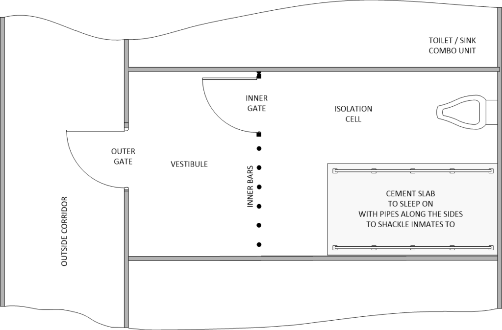
In my case, I was working on the “chain gang” and doing hard labor when I had a heart attack. (I was, after all, over 50 years old. Not used to working in the hot humid Arkansas heat, manually breaking the hard ground along side 20-something African-American youth.) It is tough difficult work for a 20 year old young man. Imagine how it must have been for me, a 50+ year old (pot bellied) white collar office worker. So, I had a heart-attack. The guards picked me up and sent me to the infirmary.
In his famous speech Citizenship in a Republic, Theodore Roosevelt spoke of that man…a man whose face was “marred by dust and sweat and blood” and who will never share his place with “those cold and timid souls who neither know victory nor defeat.” The image is striking. It is an image that I treasure because the reality was truly pathetic. Hollywood could make the situation heroic and glamorous, but it was not. It was a dirty, sweaty, and grimy situation where I suddenly found an invisible hand tugging large strings attached to my heart, and where I collapsed onto the rock hard ground.
The prison doctor looked me over. Measured my respiration, pulse and general health. He gave me two aspirins, and told me so rest on Saturday and Sunday, and then go back to work on Monday.
Take two aspirins and then go back to work.
The thing is, I was not at all ready to go back out there the next day or so. I refused. Because I refused to go out to the yard and work at hard labor, they put me in the hole as punishment.
Because I did not do any violence, theft, or hurt anyone else, my decision to not follow the rules was evidence of either stubbornness or insanity. I told them that if I went out there again, and if I had a heart attack again, I might die. Therefore I would not be going out there again.
They viewed this as insanity. Their reasoning was that I had to be locked up to protect me from getting hurt. Exactly. However, being locked up to protect one from getting hurt was only addressed in the ADC manual as attempted suicide.
So I was placed in the hole to protect me.
They stripped me. Put a paper gown on me. Chained me to a cinder-block bed inside a small cinder-block room with a toilet next to it, and closed the inner bars door, and then the outer solid door. I spent two months locked up like that.
The mind. It was all I had to play with. It was all I had to exercise with.
Noise
It is very noisy in prison.
No matter where you are at; it’s loud and deafening. A typical barracks will have guys yelling, shouting, or having loud shouting conversations sometimes many cells away from each other. (Most of the noise came from the African-American youth under 30 years old. They were like out-of-control puppies.)
Other guys are singing or just making screeching noises.
The CO’s (Correction Officers) are constantly shouting out names, orders and whatever else. It is difficult to chat on the phones. Which is unfortunate as they are so expensive to use. When you are chatting the person on the other end can’t hear you and I have to shout too (also because the phones sucked so bad!).
Some barracks, mostly occupied by older inmates are quieter. But the entry barracks are often terrible.
No matter how you look at it, prison is, if anything, very, very noisy. Some people make home-made ear plugs. They put wet tissue or toilet paper in the corner of a plastic bag, cinch the ends, and there you have it. In federal prisons I believe they sell ear plugs. But I don’t know to what extent they work. No matter where you are noise is inescapable.
As a side note, I went on the Internet and looked up noise in prison. What I found was all kinds of opinions and comments from “very quiet” to “insane loud”. So all that I can say is this. Noise between jails and prisons are different. As are noise levels between federal prisons and state prisons. In the ADC we had different barracks. The “worst” barracks were the hard labor barracks and they were very, very noisy. However, everything got real quiet, real quick when the lights went out. At the ADC, yes it was very loud.
“My boyfriend says it's loud and deafening in Osborn with guys yelling, shouting, or having loud shouting conversations sometimes many cells away from each other. Other guys are singing or just making screeching noises. The CO's are constantly shouting out names, orders and whatever else. When we're on the phone sometimes he can't hear me and I have to shout too (also because the phones suck so bad!). He says it's like that all the time and gives him a headache. A very knowledgeable member here told me that prison is, if anything, very, very noisy. I have read here that some people make home-made ear plugs. They put wet tissue or toilet paper in the corner of a plastic bag, cinch the ends, and there you have it. In federal prisons I believe they sell ear plugs. But I don't know to what extent they work. I've seen some prisons on 'Lockup' where it seems the noise is inescapable. Hope that helps, just passing on some things I learned and read about here. A friend of mine was released from prison after spending over a decade inside (later proved innocent by DNA, by that's off subject)...anyway, after marveling at cellphones, etc., the number one thing that he marveled at was the silence at night. He didn't sleep for an entire week because it was "too quiet". (Oh, and also, "too dark", since apparently the lights are on most of the time.)” -PrisonTalk
The first thing that one experiences when leaving prison is the silence. In fact, the number one thing that I marveled at when I was released was the silence at night. I couldn’t sleep for an entire week because it was “too quiet”.
Television & Stadium benches
We had two television sets in the day room. Each set was connected to an antenna that permitted reception via the TV antenna to about three other nearby stations. The television sets were encased inside a metal mesh box preventing anyone from removing and damaging the television. To change channels, the inmates fashioned a kind of stick with old toothbrush parts and used it to change channels on the buttons in the front of the set.
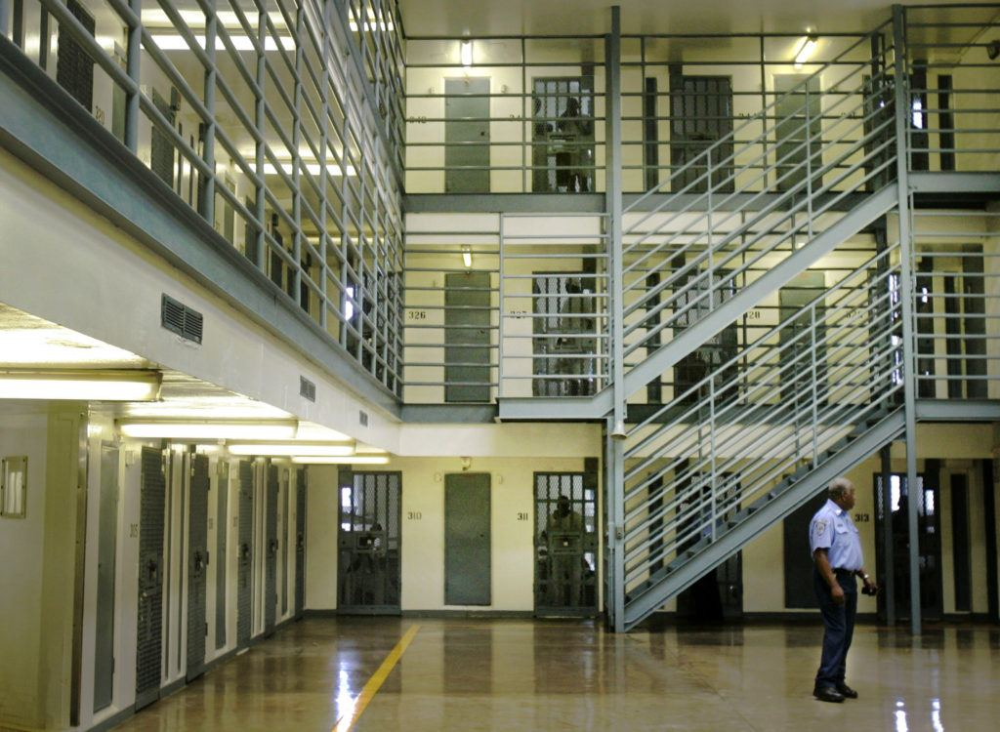
On weekends we had access to movies, and typically the staff would play movies all week for our enjoyment and “control”. Most of the movies were pretty decent.
They would pick the DVD’s out from the local DVD store and rent them for our use. The cost to do so was charged to the state. Sometimes the staff would bring in their own videos from their own video collections to show. They weren’t all assholes, you know.
To watch the movies we would have access to flat hard steel metal benches. Some barracks had a back rest, while others had no back rest. We would sit on the benches or stand up as need be to watch the movies.
Weight Lifting
Contrary to what you see on the media. There just wasn’t any kind of free weights or bench presses in the ADC. At best, we had a set of bars that could be used to do pull-ups or pushups. While I do not know the reason for this lack of exercise equipment, I suspect that it might be due to legislation passed by No Frills Prison Act that amended the Violent Crime Control and Law Enforcement Act of 1994.
“No Frills Prison Act - Amends the Violent Crime Control and Law Enforcement Act of 1994 to require a State, to be eligible for truth in sentencing incentive grants, to demonstrate that it: (1) provides living conditions and opportunities within its prisons that are not more luxurious than those that the average prisoner would have experienced if not incarcerated; (2) does not provide to any such prisoner specified benefits or privileges, including earned good time credits, less than 40 hours a week of work that either offsets or reduces the expenses of keeping the prisoner or provides resources toward restitution of victims, unmonitored phone calls (with exceptions), in-cell television viewing, possession of pornographic materials, instruction or training equipment for any martial art or bodybuilding or weightlifting equipment, or dress or hygiene other than as is uniform or standard in the prison; and (3) does not provide, for a prisoner serving a sentence for a crime of violence which resulted in serious bodily injury to another, housing other than in separate cell blocks intended for violent prisoners, less than nine hours a day of physical labor (with exceptions), any release from the prison for any purpose unless under physical or mechanical restraint, any viewing of television, any inter-prison travel for competitive sports, more than one hour a day spent in sports or exercise, or possession of personal property exceeding 75 pounds in total weight or that cannot be stowed in a standard size U.S. military issue duffel bag.” -Strength Tech
Yard Call
We were permitted to leave the inside of the prison and go outside to the prison yard. This was called “Yard Call”. We generally got one yard call a day; typically on days without rain. This was for from one to two hours.
The best time to have yard call was at dusk when there was still light out but the temperatures were going down and things were cooling off. There wasn’t much to do during yard call. Instead we generally used the time to walk and talk. Many inmates made many, many loops around the yard.
Once after spending weeks in “the hole”, I was released and I well remember my first yard call. It was a cool late afternoon, and it was just the beginnings of dusk. The sky was clear and the shade was just then forming under the trees in the distance. In the grass were one or two dandelions. I remember how fine it was to see the colors; the greens and blues, and the yellow petals of the dandelions. I will never forget the smell of the flower to my sensory deprived nose….
Yard call was important to us.
Sometimes the coach would be there and he would organize football, or baseball events. He was an important member of the prison system and greatly managed to control the tempers and passions of the inmates so incarcerated. He would not only help us play organized games, but enabled volleyball, basketball, and exercise efforts as well.
Books & Library
In the ADC there was very little in the way of reading materials. Yet, reading was the sole educational and recreational outlet for the mind in that mind-numbing place. The books were often old, and donated after an old library closed. There were rarely any new books, unless an inmate donated one that they had obtained by mail. The end result was a slew of barely readable books of marginal interest.
There were some books, of course, that a person could read with a feeling of interest. There were some classics like “Moby Dick”, Murder Mysteries and Westerns. There were also some books on history that were interesting. But the vast bulk of the books in the library where I was imprisoned were of low interest, antiquated, and obsolete. Most were not appropriate for the audience imprisoned.
In hindsight, I do not know if this was a form of torture in a Hard Labor prison, or it was the result of ignorance or indifference. The books that remained, culled from the racks of the bland and uninteresting, were sometimes interesting. I was, for example, able to read many classics that I never really had time to read when outside the prison environment. Those books that were uninteresting to me are now funny when I think back on my time there.
Examples of the book selections that we had included;
- An economic study of Memphis Tennessee from 1932 to 1935.
- Hair styling guide for the “Modern Housewife of 1964”.
- A history of the chicken.
- A 1947 Vacuum Tube selection guide.
- Cookbook for traditional Polish Food.
- Diarrhea, their causes and cures.
- How to prepare for Y2K.
- Home decorating techniques.
- How to prepare for the Global Ice Age (1967).
- Care and feeding of your emu.
- Learn Swahili in only 30 days!
- Keith Partridge fan guide with locker stickers!
- Learn PASCAL, with exam.
- Cure cancer with mind-control.
- DOS 4.0 handbook.
- Dress making patterns for the groovy year of 1966.
None of these books, as you can plainly see, were really appropriate for the imprisoned audience. Contrary to what one might assume, many people in prison came from a diverse background. There were many uneducated people, but there were also many well educated people as well.
Books related to women, or women’s interest really had no place in an all-male facility. The only inmates that found these books interesting were the homosexual crowd. Many books were outdated and had no relevance in our current or future lives outside of prison. This included books on obsolete technologies (dial up modems, dot matrix computers, obsolete software programs, etc.), political philosophies, and fads (global warming, global freezing, Y2K, pet rock, and others.) and fashions of a bygone time.
Making and cooking food
Unlike prisons in the north, we had no electrical outlets or means of making our own food. All we had as a tap with an endless stream of hot water. We used that hot water to shave with, to clean our things, and to cook. It took a while, but the idea was relatively simple. If we placed a sock in the stream of water, it could be used to hold a plastic bag containing food. If you let the hot water pour over it, the food in the bag would cook.
All barracks had one tap of hot water.
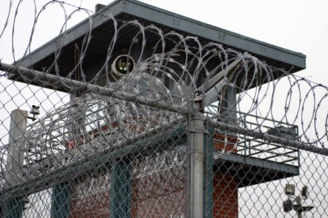
We would use this method to cook essentially two kinds of food. We could cook ramen noodles, and we could make Burritos. By far the most common community food in the barracks were burritos.
Here, we would purchase soft burrito shells from the commissary and stuff it with a mixture of whatever food we had. That food mostly consisting of commissary items, pilfered kitchen or dinner leftovers, and a wild onion or leaves found while working the hard labor squad.
The most fundamental item would be ramen noodles that would serve the bulk of the contents inside the burrito. To that we would add beans, some cheese, some meat, and whatever else we could get. Usually it also included a tube of ketchup and maybe some hot sauce.
I know that it sounds rather crude, but the process of making the burrito and cooking it, along with the necessitated coffee was a bonding adventure that helped us endure the time in the facility together.
Education (back to elementary school)
Of course, bureaucracy being what it is, one cannot believe that any government agency would take the time to fully research my background. No one cared.
Even during the judicial proceedings, they did not care. The job of the detective was to support the DA and proscute me. No one; not one single person was trying to find out the truth. The detective evaluated my case to determine how strongly they could proscute me; the stronger the better politically. My attorney was tasked with thwarting the DA efforts. No one wanted the truth.
The collection of information on me was for the sole purpose of convicting me, and had no purpose what so ever related to the real truth. Therefore my actual and real records were never obtained.
All my school records were decades old and many of the schools that I attended while a child no longer existed. My college transcripts were meaningless, as they were often obfuscated in support of my operational tasks. So where did that leave me?
According to my records, I had no education. None. No multiple university degrees. No military training. No high school attendance. No elementary school. Nothing.
Yet, according to the federal or state programs, there was a need to reduce the risk of re-offending through education. The concept behind this was that a felon would not re-offend if they had an high-school education. The idea was that having an education made a person employable.
Thus, the belief goes; if a person has a job, they will not turn to crime to obtain money. As only those with a predisposition towards theft would continue to commit crimes while they were gainfully employed. (I also agree with this belief structure.) It was a nice concept, but wholly imaginary. It wasn’t that it truly mattered…
Once a felon, you are un-hirable. It is all moot.
No one hires felons. McDonalds doesn’t, neither does any of the fortune 500 companies. If they, on the slight chance that they might, they would not hire them for a white collar position. Felons are regulated servitude class for the rest of their lives. But that fact seems to have escaped the law makers and they have rules in place to educate all incarcerated felons.
So, as one would expect, as a person with no verifiable educational history, I had to go to school. You do not need to be able to read in order to pick up trash, sweep up vomit, or work dangerous jobs in lethal chemical plants. It is all just nonsense. Such is the America of today.
Correction, some Mcdonalds will hire felons while others will not. This is depended on what state you are applying in and whether you are applying at a franchise or corporate Mcdonald’s restaurant. Mcdonald’s in not really a company, it is a franchise. Most Mcdonald’s restaurants operate as a franchise, this is very common among other restaurants also. This means each Mcdonald’s restaurant is individually owned and operated by people that live in your home town. Corporate restaurants are actually owned by the corporation Mcdonald’s. This complicates the question of whether Mcdonald’s hires felons or not. However, corporate offices, those that have an HR department will not hire felons for “white collar” positions. Though the possibility of janitor, and labor work might still be possible.
I had to get an education. Without proof that I had one, I had to start from scratch. I started in elementary school.
I started at grade one. And for months since then I had to reestablish myself through going to the elementary school in the prison. Of course, I did quite well, and eventually passed and obtained my GED diploma certificate. But that simplistic explanation of my situation belays the horrible reality of what I had to go through.
Nothing is more degrading than being an Astrophysicist / Aerospace Engineer going through elementary school all over again. To endure the mindless lessons on how to add, subtract and multiply all over again; to learn how to write sentences and paragraphs all over again.
To do it, and not feel insulted, was the biggest challenge of all.
Get together events
While we lived in a barracks, many people would form small groups of guys in clusters to chat and talk. Sometimes people would gamble, or have a “coffee party” that might involve a kind of homemade burrito made out of ramen noodles, and whatever people could scrounge up.
These gatherings were important. Whether one was playing chess, or just chatting, or even repairing clothes these events were important. The ability to meet with others, talk and share experiences was and is a fundamental need.
Sometimes, especially after mail call, or commissary call there would be large and loud parties. Here the inmates would share a coffee, or cigarette if they had any. Then they would chat, play games, and chat.
If the mail had magazines they would share the magazines, in which every single letter was read and absorbed for whatever content it contained. If the mail had newspapers they too would be read most veraciously, especially the grocery store advertisements. The inmates liked to gather around and talk about what they would do if they had those vegetables and muse about what they missed in the “free world”.
Usually pets, children and vegetables.
Prison Rape
Rape in prison happens. Usually it is cohersed sex where someone is tricked into debt. Often payment of the debt involves sexual favors. Sometimes sex is part of a gang initiation. Here is where a person reluctantly provides sexual favors to obtain protection of advantage in prison. Occasionally, predators will drug a younger member of the prison society and take advantage of them. It happens. I never experienced it, but know of the practice.
When I first came to prison we were marched past the fencing and razor wire into a room to watch an orientation film about prison rape.
This movie included helpful suggestions like not to take a Snickers bar if someone offers it to you because you may be required to provide sexual favors in exchange. I think this was a standardized film that is shown in all the prisons, not just in Arkansas. As such, returnees to the prison would make comments during the file.
Yet, It did actually happen to me.
Someone actually left a candy bar on my rack. Not a Snickers bar. But, I knew better than to eat it. Later on, I met the individual who tried to manipulate me into owing him favors. But, I had no intention of doing that. However, I did suggest to him that we might be able to open up a “dialog” in the future for various transactions that might be beneficial to all involved. He was cool with that, and that was how I diffused that particular situation.
Beds
We were all assigned our own individual rack in a huge barracks often holding 80 to 100 inmates. The rack consisted of a metal frame with a welded box on the end of the bed. To access it, you lift up the mattress and open the box in that manner. Each box had a lock to keep other inmates from stealing the objects inside.
The mattress was a standard prison-grade flat open foam rectangle covered with a polyvinyl covering. They tended to be tan in color. Each rack was issued with a set of sheets which was a top sheet and a bottom sheet and a pillow case. We did get issued a small pillow to sleep with. It was approximately 14 inches by 10 inches square, as I recall.
We were issued a wool blanket with was grey in color. These were military grade surplus blankets. They were being phased out in favor of a much cheaper alternative. The new blankets were not woven, but rather pressed fiber. They looked and acted like sleeping under a car floor mat. They were not at all easy to sleep under. Their main problem was that they tended to crumble apart with use and would thus have huge gaping holes in it that would require periodic repair once or twice a year.
Coffee
There was one “drug” that inmates were permitted to have. That was coffee. And we all treasured it. We could get coffee from the canteen in the morning, but that was “state issue” coffee and tended to be like watery tar. But we could and would purchase coffee out of the commissary. We could purchase a plastic cup and then mix up a fine blend of stout coffee and drink it in the barracks. It was a great way to make friends and break the ice.
No one is going to hassle the man who gives you free coffee.
We would often use it for after or pre-dinner get togethers. There we would sit around and chat, while drinking coffee. If we had extra money to spend we would buy non-dairy creamer (powder) and artificial sweetener to mix in it. Real sugar was not available to us.
As coffee went, it was really not bad. As the only recreational drug available, some inmates would make a routine or ritual in which every day at a certain time they would drink this beverage. This ritual was their little way of maintaining sanity. Other inmates would take the powder and add it to the milk that they would get in chow hall. The smell of the coffee evoked far away memories of better times, and because of that, many inmates treasured their times drinking coffee.
Cigarettes
The ADC did not permit smoking or gambling, or even fruit to the inmates. These were considered to be dangerous vices, or in the case of fresh fruit, lead to dangerous vices though the manufacture of “moonshine”. So possession of these items was illegal, dangerous and risky.
I remember once having a discussion with a fellow inmate who missed eating a banana. He could picture eating a banana, he remembered how it looked, tasted and smelled, but he longed to eat the banana. It had been over seventeen years (17 years) since he had a banana. He would opine about his loss of freedom to eat that banana for hours. It was, truly, sad. (Arkansas; the ADC, never gave us fruit. EVER!)
You could obtain these items, of course, but they were prohibitively expensive. A cigarette ran you between $2 and $5 depending on who you were and what brand was available. Cigars were unheard of. I once heard about some inmates smoking a pipe, but I never saw it. I also once saw someone chewing tobacco that his girlfriend smuggled in through her rectum. Again, other states permit inmates to smoke, and eat fruit. As does many federal prisons. But the ADC tended to be rather medieval in their imprisonment philosophy.
Drugs were easier to smuggle in because of their small size, but were very expensive. Most of the rank and file inmates in General Population rarely if ever used drugs, smoke or drank. I certainly never did. It was prohibitively expensive and risky. Getting involved in such activity tended to be dangerous.
That was because it caused one to get indebted to another inmate. Usually the only way to repay that debt was through sexual favors or other, usually gruesome, tasks. Besides, if you got caught not only would you spend a considerable amount of time in “the hole”, but you would get additional charges added to you sentence. That meant that additional years could and would be added to your sentence. It was not worth it at all.
Usually, those whom were able to participate in these pleasures were members of gangs, long time incarcerated felons, and homosexuals. The gangs usually had a deep seated and well organized network in place to supply these articles, while the homosexual crowd often provided sexual pleasures and favors to the general population for a price. They always had funds, money and stash available to them. Providing sexual favors is nothing less than a cottage industry for the imprisoned homosexual community.
Gambling
Gambling occurs frequently and it can never be eradicated. The inmates made their own dice, or their own playing cards. They even devised homemade games that they would bet on. When that would not work, they bet on Dominos. Gambling was dangerous because one could literally become an indentured slave if one was not careful. I never partook in that particular vice, but I know of many who did.
Homemade dice was constructed from soap. Sometimes bingo cards were made, as well as a deck of playing cards. For a while, there was even a race track where captured cockroaches were raced for profit.
Fights & Killings
“In the era before gunpowder, all killing was of necessity done hand to hand. For a Greek or Roman warrior to slay his enemy, he had to get so close that there was an equal chance that the enemy’s sword or spear would kill him. This produced an ideal of manly virtue – andreia, in Greek – that prized valor and honor as highly as victory.” -Steven Pressfield ( The Warrior Ethos) The reader should note that Andreia meant that judgment was based on actions taken — not on outcomes. Society understood that the outcome was, at least in part, in the hands of the gods. What was in a man’s control was how he acted.
People get killed in prison. Everyone knows this. But it is one thing reading about it in the paper, and yet all together a different thing when the person sleeping next to you is killed while he slept. While I was there, I physically watched three killings take place, or the aftermath of them. In all cases they involved petty disputes between one inmate and another.
Whether competing for food, fighting hand to hand, or challenging each other in the sporting arena, mastery of one’s own physical abilities is an important part of being a man. The most primitive, yet still one of the most prominent traits, a man’s physical capability affects everything from self-preservation to mating preferences. The health and virility of a male make him an appealing candidate for partnership with the opposite sex, while his strength and stature still prove to be influential factors in both the social and business world.
1
As I mentioned above, the inmate sleeping on the rack next to me was killed in his sleep. When we got up to go to chow hall for breakfast he just stayed on his rack. Then he stayed in bed while everyone left to work the fields. It wasn’t until the inmate in charge of sweeping the floor noted that there was some blood that had dripped from his neck on to the floor. Why there wasn’t more blood is unknown. But to the rest of us we just didn’t really pay too much attention. If an inmate wanted to be left alone on his rack, we let him be. It was his “space”.
2
Another time, one of the inmates was stabbed as he was going to eat chow. Apparently the fight was over a love triangle between two gay men. He was stabbed in the back repeatedly and while the guards tried to maintain order and control, it just didn’t help much. He died of multiple stab wounds to his back. Blood was everywhere. I just happened to be marched down the hall when it happened. The guards all had us turn around and face the wall while they secured the inmates involved.
3
The third killing involved a gang dispute of something or the other. I don’t know much about it except to say that one inmate went to the bathroom, and he was followed by about six other inmates. They pretty much beat him to death. There was blood everywhere. In prison, you don’t have time or the luxury of taking your time. From the moment that the first conflict was noticed by the guards until lock-down, perhaps three minutes transpired. That was all that was needed to kill the guy.
Perhaps the most accurate portrayal of what a killing looks like in American media can be found in the AMC television series “Breaking Bad”. There in the series was a scene where multiple inmakes were murdered upon order in Jail and prison. That is pretty much what it was like. Accurate. It is eerily accurate.
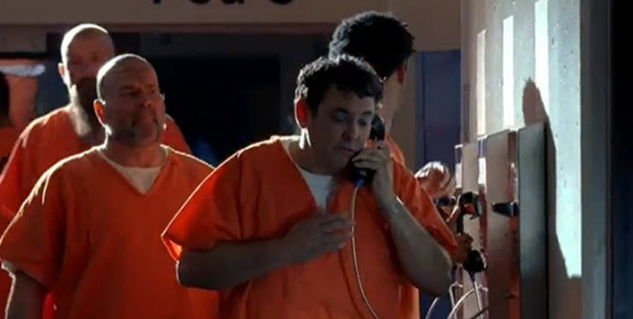
Exiting Prison
One might think that exiting prison would be a great watershed moment for me. It was certainly a day of bitter-sweet happiness for me. Indeed, it was, in a way.
However the truth was that my real problems were only just beginning.
Forget that preconceived notions that you might have regarding post-prison life, if any. Once one leaves the place where they lived for years, and enter the general populace, they go into shock.
In fact it is common knowledge that the person exiting prison, whether totally free or on parole, will spend at least three days to two weeks simply being in shock. This is especially true if you did your time in a hard labor prison; one with no colors, no soft surfaces, and bland food.
"I feel that the Air Force has not been giving out all the available information on the Unidentified Flying Objects. You cannot disregard so many unimpeachable sources." -John W. McCormack, Former Speaker of the House, January 1965
Everything is just so different. You will sit on chairs with cushions. You will see electrical plugs in the walls, and will be able to turn lights on and off at will. The former-inmate can go into a store, browse around and actually buy something. They can watch television when they want, and what they want. These are big; big changes if you haven’t been able to do so for the last few years. But that is not the biggest issue that faces a released felon…
The truth is a bleak one. With all your money, bank accounts, and possessions seized by the government, friends, and family there is little chance that you would have much of anything when you leave prison. I, like others before me, held all of my possessions in a brown paper bag. That’s it, a simple brown paper bag, stapled shut; a debit card with $100 and a bus ticket to a relative or family member.
Government Officially, the government is not supposed to seize anything. Yet, in my case, they seized all my papers, electronics and held some of my bank accounts. They offered to give some of my records back. But every time that I went to the office to get them back from the detective, they were [1] busy, [2] not available, or [3] couldn’t help me. After about five years, I got the message, and gave up. Everything was gone. I never could recover any of my money, any of my personal papers, and any of my personal documentation. Friends My friends took all of my furniture and personal belongings. They told me that they would hold on to them and keep them in storage for me. When I exited prison, my friend had died and his family took possession of my belongings, the rest was taken and collected by other “friends”. Most were sold for pennies on the dollar to strangers and pawn shops. I never was able to recover them. Family My family did some awfully stupid things concerning disposition of my larger belongings. My father gave my car away, because in his words “you can buy a new one when you get out”(!). My brothers and sisters took my furnishings for the most part, and kept them without remorse. (I used to paint figurative art in oils, and was reasonably good. Each painting cost me at least $60 in materials, and I painted on plywood that cost at least $40. So one could say that my art, whether attractive or junk, was at least worth the cost of the materials. Heck, a buyer could have purchased the painting, sanded off the paint and reused the $40 board. He sold each one for $1. Such is the bane when one is imprisoned, and nincompoops (Nincompoop is a another word for a fool.) control the distribution of your estate.)
The ADC gave me $100 to start my life all over. $100 does not buy much in America these days. I bought a big Mac meal, and a cheap hotel room with it. Leaving a handful of change.
Keeping it secret from other inmates
When a person is about to leave prison, the first cardinal rule is to tell no one. There are many kinds of people in prison, and that includes hard-core criminals and jealous convicts that do not want to see others being granted their freedom. This is a common enough problem that all inmates and guards know about. All of us know of others who would get involved in a knife fight or other problem on the same day that they are exiting the facility. It is important to keep things confidential and secret from others.
While the exiting inmate might get killed, it is far more common to be involved in some crime that would result in additional time being placed and added to their sentence. I knew of one inmate that had an additional seven years added to his sentence, on the day that he was scheduled to leave. This was because another inmate “set him up” with a stash of contraband narcotics. You must be careful in prison.
Turning in your state issue
Inmates don’t have much belongings, but they do have a mattress and pillow, a pair of shoes, and a handful of toiletries. While the inmate can keep their personal possessions, they must return the rest of their belongings to the state. This generally means the mattress, pillow, wool blanket, sheets, towel, wash cloth and shoes. The inmates can keep their socks and underwear.
Typically the inmate is marched down the hall to the laundry room, and he turns in the items. Typically, the inmate carries his mattress on his shoulders, and his clothing wrapped inside the bed sheet. One hauls it to the laundry office and turns it in. It’s pretty simple. The clerk records what is being turned in, and then the inmate returns back to their barracks.
Saying goodbye
"I feel that the Air Force has not been giving out all the available information on the Unidentified Flying Objects. You cannot disregard so many unimpeachable sources." -John W. McCormack, Former Speaker of the House, January 1965
Like anything else, you make friends in prison. Contrary to popular belief, prison is not full of horrible people. Yes, there were some really bad people. Yes, there were some people who did bad things. Yes, there were people who were predisposed to commit crimes; but not everyone in prison fit this stereotype.
Many of the people in prison were there because of a series of mistake or error of judgment. Some were just because they ran afoul of some of the many laws in the United States. All in all, even the most law-abiding American will inadvertently break a minimum of three laws a day if they live in the United States.
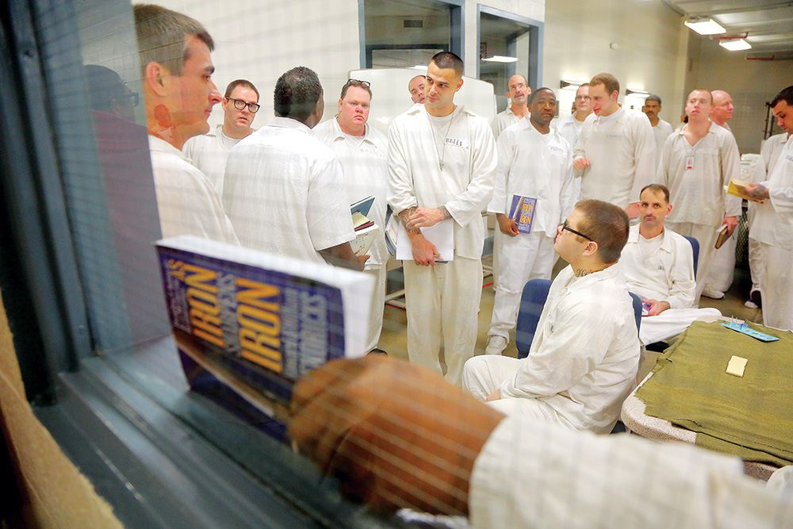
Arkansas Democrat-Gazette/STEPHEN B. THORNTON
An inmate holds a class book along a window sill as he waits with others to be released from their living area for classes in the Prison Fellowship program Thursday at the Arkansas Department of Correction’s Wrightsville Unit.
Some people committed horrible, just horrible crimes, but were personable and nice in person. Others were just regular guys who happened to kill someone while in a car accident. Many were there for smoking illegal drugs, or writing bad checks, or downloading MP3’s or movies on the Internet without paying for them. Some were just kids. Some were remorseful felons who did a terrible crime decades ago and are just trying to live that down. There were bad people, yes. But not everyone was horrible.
Some were just men who married the wrong woman. She, using all of her abilities, and a agreeable court system enabled the enactment of harsh penalties for male indiscretions.
You make friends there. And when it is time to go, many will miss you. I had a number of friends who are facing a lengthy spell behind bars, and saying good-bye was rather difficult. When it was time to go, we exchanged addresses, passed on some of my belongings, and had a last cup of coffee together. No matter where you are, no matter where you go, there will be people and you will make friends. Even in prison.
Getting Street Clothes
The first step that occurs when a person leaves prison is to get new clothes. For years we were living in our “state issue” prison uniform. But, we certainly couldn’t wear that out on the street. So we eventually are directed to the wardrobe room where we are issued or fitted out with more conventional “street” attire. This “room” is typically just a large closet with piles of old used clothes that have been, thankfully, pre-washed and folded for our use.
I wish that I could state that we were given a cheap suit and some oxfords to look for a job, but that wasn’t the case at all. The days are long gone when the state tries to help the felon obtain work. No, instead we were directed towards a large closet filled with donated used clothing. For reasons related to availability of clothing, the most popular clothes have already been taken, and when I went to the clothes closet, all that was left were the dregs.
In fact, it is common knowledge that the HR organizations will not hire felons for any white collar work. And, at that, most will even refuse to hire felons for most work except for the lowest paid menial labor positions. All fortune 500 companies, with a handful of notable exceptions, refuse to hire felons. That includes McDonalds and Starbucks. It is their choice, of course, but the days of being able to reenter the job market for felons is long gone. Especially in America. Once a felon in the USA, always a felon. The USA is one of the few rare countries to do this. For instance, in China, your records are automatically expunged after three years. USA, not the case. In the age of the Internet, felons are unemployable. As a poignant reminder of this, my first cousin, with whom I grew up with, was the HR manager of a large international organization that employed engineers in the fields that I specialized in. Not only that, but they had openings for people with my background. But when I asked her about work she “poured cold water” on my dreams. She said that her firm had strong rules about hiring felons, and that it was absolutely forbidden, and no exceptions were ever granted. This was my first cousin! We played together as children. We grew up together. She knew me better than my wife in some ways. Yet she would not help me get a job. I was a felon. That was it. End of story.
All the clothes either had huge torn holes or lost buttons, or were garishly decorated t-shirts with dated sayings like “”Dyn-o-mite!”. , or “Groovy”. I would have been happy with a collared polo shirt, but the only ones remaining were either too small for me, lady-boy pink color, or (even) an old McDonald’s uniform top. Sigh.
So, I ended up putting on a pair of polyester pants with what we used to call “elephant bells”, where they found this forty year old pair of superannuated and antiquated throw-back God only knows. Perhaps it was sitting in the closet for decades, overlooked and avoided.
I topped it off with an equally dated t-shirt. It was a bright yellow shirt with the words “I’m with stupid” and a hand that pointed to my groin area. For shoes I got to wear a pair of real cheap, and slightly worn, “earth shoes”. I looked like a clown, but I figured that I could get more acceptable clothes once I left the prison facility, so I wasn’t too concerned.
Dyn-o-mite! The character J.J. on the show "Good Times" had the catch phrase "Dyn-o-mite!". It spawned an entire series of promotional materials including lunch boxes, hats, and T-shirts. Good Times is an American sitcom that originally aired from February 8, 1974, until August 1, 1979, on CBS. It was created by Eric Monte and Mike Evans, and developed by Norman Lear, the series' primary executive producer. Good Times is a spin-off of Maude, which is itself a spin-off of All in the Family. I was released from prison in 2011, so the clothes that I was released to society with were fashionable over 30 years earlier. Groovy Groovy (or, less commonly, "Groovie" or "Groovey") is a slang colloquialism popular during the 1960s and 1970s. It is roughly synonymous with words such as "cool," "excellent," "fashionable," or "amazing," depending on context. Earth Shoes Earth shoes (also known as Kalso Earth Shoes) were an unconventional style of shoe invented in the 1970s in Scandinavia by Danish shoe designer Anna Kalsø.[1] Unlike most other shoes, the soles were thick and the heels were thin (Negative Heel Technology), so wearing them one walked heel-downward. The shoes were introduced in the United States in New York City on April 1, 1970, three weeks before the first Earth Day. The shoes surged in popularity and were prominently featured on The Tonight Show Starring Johnny Carson and TIME Magazine. Unable to keep up with demand, franchise owners pursued litigation against the United States distributor of Kalso Earth Shoes, and the brand discontinued being sold at retail by the late 1970s.
After “dress out” I was led to the Infirmary where I got my finger pricked. This is a mandatory blood sample and DNA extraction. The blood sample is to see if I had contracted AIDS while I was incarcerated. If I did, then they might have other procedures that I would have to endure. But, of course, I was clean. I also had to give a sample of my DNA. All felons in the United States, or at least in the state where I was incarcerated, have to provide a DNA sample to go into a state DNA repository.
I then proceed to the Wardens office. I where I got my [1] release papers which included a [2] “Diploma of completion of my prison sentence”, and my [3] latest sex registration information. I was given a multi-page list of things that I could not do as a released sex offender (within the state that I was released from), which included substantial reporting information and limitations on where I could live.
BTW (By The Way) in the United States, the emancipation of slaves only applied to non-felons. If you are a felon, you CAN ( and in some instance WILL be) be treated as a slave and have a large number of restrictions placed upon you. I thus, entered the ranks of being a second or even as a third class citizen. A restriction on a right, no longer qualifies you to live “free”.
As I walked out of the fenced compound, I did so with no handcuffs on. I wasn’t wearing ankle-chains. I was wearing civilian clothes and I clutched my brown paper bag in my hand.
The sun was shining, and one of the girl officers standing guard in one of the watch towers put down her rifle and gave me a big goodbye wave. She said “Goodby XXXXXX, I don’t want to see you back here again. You stay home. You hear me?” I told her goodbye and not to worry. My plans involved growing tomato plants, and being good.
I was given a debit card with $us100 in it, and driven to a Greyhound bus station, where I was given a ticket to my destination of choice. As I got ready to board, the guard who took me to the bus station wished me the best of luck and told me that he didn’t want to ever see me again, because I was better than the fate that waited for me in prison. He was right. He gave me a nice friendly handshake and I boarded the bus.
He wasn’t the only guard who wished me the best. A number of them did. At least five guards really cared about my well-being and earnestly wished me well. I was always respectful and treated others decently while I was incarcerated. I pretty much obeyed the rules and did my time.
In fact, during my final stay, I would say that most of the guards were pretty decent folk.
Conclusion
When I joined MAJestic I was unaware that I would be retired by the prison system. I was told that I would be in it for life. No one said anything about retirement. Yet agents are retired when they are too expensive to maintain or they have lost their usefulness. I was retired after thirty years and then decommissioned at ADC Pine Bluff.
We have a massive problem with incarceration and re-entry in America. One in three Americans have a criminal record, and 60% of those are unemployed one year after being released. Getting a job with a criminal record is almost impossible.
Decommissioning took ten days for me. A team of individuals were sent to the facility and they decommissioned my seven ELF probes. They were unable to disable the EBP, however, and thus I am still entangled. I am currently entangled with <redacted> and still have (retarded) MWI access and egress ability.
The purpose of the entire retirement exercise was to put me in a monitoring program. The only legal monitoring program in the United States is the Sex Offender Registry, and they only way that you can get placed on it is through being sentenced as a felon.
Monitoring is necessary because NO ONE knows anything about my role within MAJestic. We are organized into cells, with dissemination of information handled by an aggregator. The only way that an agent can be retired safely is to put them into a monitoring program. Else, no one knows what we are capable of. No one.

This is my narrative as to what it was like for me. I hope that the reader finds this interesting.
Summary
If you have a loved one in the ADC do not worry. Chances are that they will be fine. It’s not a great life by any means, but it is not the horrible nightmare that one expects. We, as humans, eventually adjust to the circumstances that we find ourselves in.
Believe me, I sincerely wish you and your loved ones the best.
Take Aways
- MAJestic retires members after thirty years of service.
- Retirement comes in many forms, but the most common demands monitoring.
- The only way to monitor a former MAJestic agent is through the Sex Offender registry.
- Many MAJestic agents enter the monitoring program through the ADC.
- When in the ADC we share the prison environment with others who have varying levels of innocence and criminal intent.
FAQ
Q: What is the most common thing that felons say to each other?
A: I don’t belong here. I was only doing XXXXX. Everyone else was doing it. The DA was against me. I should not be here in Prison. I do not belong here.
Q: What is the most common thing that non-felons say?
A: You were stupid. I would never be sent to prison like you were.
Q: What do you think about prison?
A: I can only view prison from the prism of my own experiences. Just like you, the reader, can only view it from your own experiences.
For me, I see now that I had to be put into a monitoring program. This is simply because no one knew what I was involved with. It was way, way beyond the technology that we humans have. I think that for the most part they think that my involvement and capabilities are benign. However, it is in the best interests of everyone that I be monitored.
On a personal level, I needed the experience of prison to slam-shut one door of life, and to open a new door. This new door is one where I am a better and superior person. I have already shed much of the baggage that shacked my behaviors and life in the past.
Q: What advice do you have for someone entering the ADC?
A: It is not going to be as bad as you fear. Fear is the worst thing about anything. Stop fear in it’s tracks. Most things are NEVER as bad as you fear them to be.
Q: Do you think that you were placed in prison under false pretenses?
A: Most certainly. But that does not matter.
As a MAJestic agent, let me tell you, the reader, a few secrets. Prisons are NOT used to put criminals away from honest, law-abiding, citizens. They are used for a range of other purposes and functions. This runs the gambit from politics, to business advantage, to various secret organizations and clandestine purposes to everything else under the sun. Yes, prisons are used to help “punish” criminals to prevent them from doing bad acts, but that is not their “real” purpose.
If it was, there would be many, many, many others would would be in prison long before I ever went there.
I was in a secret program that involved <redacted>. No one knew what I was doing, what my capabilities were, and my purpose. It was too expensive to keep my handlers active. So I was retired. I needed to be put into a legal monitoring program. It’s really that simple.
My Final Say

MAJestic Related Posts – Training
These are posts and articles that revolve around how I was recruited for MAJestic and my training. Also discussed is the nature of secret programs. I really do not know why the organization was kept so secret. It really wasn’t because of any kind of military concern, and the technologies were way too involved for any kind of information transfer. The only conclusion that I can come to is that we were obligated to maintain secrecy at the behalf of our extraterrestrial benefactors.


Posts Regarding Life and Contentment
Here are some other similar posts on this venue. If you enjoyed this post, you might like these posts as well. These posts tend to discuss growing up in America. Often, I like to compare my life in America with the society within communist China. As there are some really stark differences between the two.


 dies and what actually happens to them and why.")


 I am horrified, just horrified, that parents do not allow their children to play, roam and explore on their own. It has created a society of pampered fearful children. Here I discuss this in terms of what I know. This is very non-PC and might offend the more liberal readers out there.")
 This is the second part of my rant about permitting children to play, explore and have fun. Everyone, the odds that some stranger will abduct your child is very small. Most people who do this are family friends and neighbors. Stop being so fearful. It harms the development of your child.")

 Anyways, it’s just all fun and games. Enjoy.")
More Posts about Life
I have broken apart some other posts. They can best be classified about ones actions as they contribute to happiness and life. They are a little different, in subtle ways.


MAJestic Related Posts – Our Universe
These particular posts are concerned about the universe that we are all part of. Being entangled as I was, and involved in the crazy things that I was, I was given some insight. This insight wasn’t anything super special. Rather it offered me perception along with advantage. Here, I try to impart some of that knowledge through discussion.
Enjoy.


 that damaged a vessel (of some type). Over the years it has become buried in silt, which later turned into stone. Here we study this issue.")


MAJestic Related Posts – World-Line Travel
These posts are related to “reality slides”. Other more common terms are “world-line travel”, or the MWI. What people fail to grasp is that when a person has the ability to slide into a different reality (pass into a different world-line), they are able to “touch” Heaven to some extent. Here are posts that cover this topic.


Links about China
China and America Comparisons